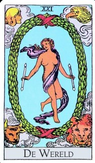

Hoofdstuk 21 Er is altijd genoeg om volmaakt gelukkig te zijn.
De Wereld.
 Schrijven over Wereld of Werelden voelt heel anders dan schrijven over Planeten en Manen. Verdiep ik mij in het tweede deel van de vergelijking dan open ik mijn bewustzijn voor lokale ruimte en tijd. Daaronder, in het eerste deel, schuilt echter een meer algemene verwondering over het bestaan en niet bestaan van wat dan ook en de individuele positie daar in.
In het eerste deel gaan mijn associaties op Wereld en Werelden naar bewoonbaarheid en menselijkheid.
Onderzoek van de fysische ruimte heeft ons het bestaan onthuld van zwarte gaten. Wij weten niet echt waar die zwarte gaten vandaan komen, net zomin als dat we weten hoe onze chakra’s precies werken.
Volgens de algemene relativiteitstheorie is een zwart gat een gebied waaruit niets, zelfs licht niet, kan ontsnappen,
Een wit gat is in de astrofysica een hypothetisch hemellichaam dat energie, sterren en andere materie uitspuwt. Een wit gat is het tegenovergestelde van een zwart gat, waarin alle materie naar binnen wordt gezogen.
Een Q-ster (ook bekend als Grijs gat) is een compacte zware neutronenster waarbij de materie zich in een exotische staat bevindt.
Met deze 3 aan de symbolische slag te gaan doet mijn breintemperatuur onmiddellijk oplopen tot exotische hoogte.
Ik leef niet alleen in of op een wereld, ik ben een wereld, maar dan wel een waar ik maar heel weinig van snap. Zwart en wit houden elkaar mooi in evenwicht, maar grijs als synthese van die twee ontsnapt aan simpele zwart-wit redeneringen, en vraagt om eindeloze nuancering.
Als ooit de oproep aan de lezer zelf aan de slag te gaan met het geven van betekenis dan is het wel hier in de Wereld.
Grijs is de kleur van een ongecommitteerde neutraliteit waar wetenschappers en occultisten een groot deel van hun aannames kunnen zien ontstaan. Als ik tegen mijn wetenschappelijke vriend zeg dat zijn theorieën voor mij niet meer zijn dan meningen jaag ik hem aardig op de kast.
Ik begon mijn verhaal met Nul maar hier in 21 word ik in alle gewemel van kosmos en bewustzijn geconfronteerd met zwarte, grijze en witte gaten en met een reeks van theorieën die minstens zo bewustzijnsveranderend zijn als de quantummechanica. De gaten die ons nu zo bezig houden geven hun geheimen slechts indirect prijs. Ik kon een giechel niet onderdrukken toen de gedachte voorbij kwam: ‘Als ik mezelf maar zwaar genoeg maak word ik net zo onzichtbaar als Harry Potter’. Als het aan de natuurkundige Baile Zhang ligt moet onzichtbaarheid gezocht worden in de ombuiging van licht. Dat is wat magneten doen, en zwarte gaten moeten dus wel formidabele magneten zijn.
Met betrekking tot de sjamaan nemen we aan dat hij (zij) met één been in de zichtbare- en met het andere been in de onzichtbare wereld staat. In die zin kunnen zwarte gaten gezien worden als verbindingen tussen het fenomenale, fysische realisme en de wereld van donkere, onmeetbare materie en energie. De verdamping als eindfase van een zwart gat gaat dan in feite over de overgang van het meetbare naar het onmeetbare. Sommigen onder ons maken hier - misschien niet onterecht - een vergelijking met het beeld van het profane dat transcendentie zoekt en vindt in het sacrale. Uit eigen ervaring kan ik melden dat mijn concentraties op de mogelijkheid te ontsnappen aan de zwaartekracht gepaard gingen met de noodzaak het gewicht van mijn lichaam optimaal tot bewustzijn te brengen. Kortom ik vind hier in 21 al direct een wereld van symbolische studie die zich razend snel ontwikkeld, en waar de komende generaties hun handen aan vol zullen hebben.
Als ik ideeën over supersymmetrie naast theorieën over resonantie leg, of naast de theorieën van Teilhard de Chardin over de noösfeer, dan wordt het licht in mijn hoofd. Theorieën over de manier waarop het bewuste en het nog niet bewuste met elkaar communiceren hebben sinds de grot van Plato, via Jung’s ideeën over het onbewuste en over synchroniciteit een plaats veroverd in snaartheorieën waar we dezelfde problemen zien ontstaan omdat de taal waarin we de quantumfenomenen beschrijven dezelfde is waarin we de klassieke mechanica hebben beschreven. Niet dat er iets mis is met die taal, maar de manier waarop we taal gebruiken verwijst teveel naar veronderstelde zekerheden die onze inzichten alleen maar beperken. We spreken dan ook van reductionistische denkmodellen. Mijn behoefte aan de creatie van een cultuur waar het niet om waar of onwaar gaat maar om betekenissen die wij onderscheiden wanneer we de wereld zoals we die aantreffen als een gigantische spiegel van onze grotendeels onbekende binnenwereld ervaren. Symboliek in deze redenering is die meta-taal waar ik al zo lang naar op zoek ben.
Het is misschien te vroeg om parawetenschappen de rehabilitatie te gunnen die ze verdienen. Beseffend dat snaartheoretici met 10 of misschien zelfs 11 dimensies rekening houden, kan ik herinneringen, dromen en sprookjes wat makkelijker zien als manieren waarop allerlei superingewikkeldheden voorstelbaar gemaakt worden voor een gemiddelde wereldburger. Vrijwel iedereen kan sprookjes lezen en die op een eigen manier interpreteren. Niet iedereen is in staat de bijna kabbalistische vormen van fysische- en mathematische modellen in de quantummechanica te lezen, laat staan te begrijpen.
De tunneltjes die de sjamaan in staat stelt om van de ene staat naar een andere staat van bewustzijn te reizen kunnen nu vergeleken worden met quantum tunnelling. Zowel ‘quantum-magic’ als de daarvan afgeleide nanotechnologie openen hier de poort naar een nieuwe dimensie, ja zelfs naar de veelgenoemde paradigmaveranderingen als voortzetting van de belofte van een nieuwe hemel en een nieuwe aarde. De 1 in 21 belooft meer dan ik hier kan verzinnen.
Het moge duidelijk zijn dat het wereldbeeld kantelt en dat er een beroep wordt gedaan op de menselijke soort om het doodsbewustzijn te verruimen, simpelweg door er meer van tot het bewustzijn toe te laten, en niet alles af te hakken wat toevallig niet in ons straatje past, zoals humanistische fundamentalisten doen, misleide geesten die naar eigen zeggen alleen geloven in een leven vóór de dood. Bedenk hier dat inspiratie een van de uitlaatkleppen is van het duistere onbewuste, ofwel het onmeetbare doodsbewustzijn, en zonder inspiratie zullen we de toenemende crises niet te boven komen..
Ik kan naar de transcendentale aard van 21 kijken als ware het een reïntegratie van persoonlijke- en collectieve informatie, en dus ook van alles dat ik in de onderliggende hoofdstukken heb opgeschreven. Morgen is alles weer anders; verandering is een onveranderlijk gegeven..
De gespletenheid van 12 wordt in 21 fusie, dan wel vereniging, en de implicaties daarvan gaan mijn verstand een flink stuk te boven.
In politiek, in de media maar ook in de wetenschap bestaat er gerede verwarring over de paradox, uitbreiding van informatiebronnen en -stromen te verbinden met gezonde verdienmodellen. Commentatoren die er niet zeker van zijn of deze of gene renner zich al of niet in het peloton bevond worden direct geholpen door onbetaalde twitteraars of door ‘vrienden’ op diverse sociale netwerken die aan de onzekerheid een einde maken. Het begrip ‘intellectueel eigendom’ is aan het verwateren, en omdat alles wat wij in de wereld kennen in de geest begon mogen we deze paradox in toenemende mate terugzien in alle economische en politieke werkelijkheid. Eeuwenlang werden we beheerst door recht en onrecht die aan de strijd om mijn en dijn vorm gaf. Deze modellen - dan wel gewoontes - zijn bezig in te storten en maken ruimte voor een ander soort van beleving in onze omgang met hetgeen ‘ons gegeven is’.
In 21 wordt het bal geopend door de TWEE die eenwording gevonden heeft met de EEN.
Ik vergeleek die ervaring met de thuiskomst van de Verloren Zoon. Het is hier dat ik op moet passen niet te vallen voor verleidingen waar engelen destijds geen weerstand aan konden bieden, en waarbij hun hemel veranderde in een hel. Het beeld van Gevallen Engelen kun je nauwelijks tot de utopieën rekenen, of het zou een heel sombere utopie moeten zijn en dan is het helemaal geen utopie maar een dystopie. Geen heilsstaat maar een doemstaat.
Wie stijgt op de hemelse ladder moet oppassen niet te vallen. Helaas valt er ook weinig te leren als we niet af en toe flink onderuit gaan. En wie zit er nu op een heilsstaat te wachten? Dat roept maar herinneringen op aan allerlei vormen van extremisme en totalitarisme zoals die vorm kregen in onze niet te stillen behoefte aan een of andere ideologie.
Het is de menselijke soort niet helemaal aan te rekenen. De vloek van extremisme en totalitarisme enerzijds, en de heilzame noodzaak normen en doelen te stellen anderzijds’ heeft een kloof uitgeslepen tussen wens en wenselijkheid.
Maar goed, de neiging kaart 21 te zien als de apotheose van al het goede en goddelijke grenst aan het soort van naïviteit dat bij het ‘1 + 2 = 3 = het kind’ past.
Omdat ik de gemiddelde lezer, als ze ook maar enigszins op mij lijken, wel enigszins zie als experts in het creëren van een of andere hel, zal ik me in 21 vooral richten op de positieve kwaliteiten. Natuurlijk moeten de ketenen van de duivel verbroken worden zodat hij of zij kan teugkeren naar de oorspronkelijke engelenstaat, dat geldt voor mij en voor elke eventuele lezer van dit verhaal. Ketenen staan symbool voor verslaafdheden, makkelijk aan te komen, lastig uit te bannen.
Ik heb in vorige hoofdstukken gezocht naar een vlucht uit deze toestand en kwam uit bij een tunnel waar ik doorheen moest, zoals een ongeborene zich door het geboortekanaal moet wurmen.
Het moment is nu aangebroken om een poging te wagen, en met een schets te komen van hetgeen er aan de andere kant van de tunnel te vinden is. Is er leven na de dood?
Een lucide droom is een droom waarbij de dromer zich bewust is van het feit dat hij droomt.
Ben ik in staat om die heldere staat op te roepen en vast te houden? Ben ik in staat om het potentieel van beide hersenhelften operationeel te maken?
Dat zijn mijn vragen, zoals dat ook de vragen zijn van vrijwel iedereen die zich op enigerlei wijze met meditatieve technieken bezig houdt.
Als definitie voor de sjamaan vond ik onder meer: ‘De sjamaan staat met één been in de mensenwereld en met het andere been in de geestenwereld’. Het is dus niet het een of het andere maar een samenvallen van geest en materie, ofwel van de erkenning dat onze zogenaamde werkelijkheid geen op zichzelf staande toestand is maar een getrouwe afdruk van wat ik dan maar een persoonlijke kosmologie zal noemen. Er kan daar buiten niets gebeuren dat ook niet in mijzelf plaats vindt. In omdraaiing kan ik dan opschrijven dat er in mijzelf niets kan gebeuren dat ook niet in de kosmische ruimte ervaren kan worden. Astrologie is het resultaat van dit soort opvattingen, en astronomen die zich aangesloten hebben bij dat duistere genootschap dat slechts leven kent voor de dood doen er verstandig aan - voor eigen gezondmaking - eens goed naar de moeder van hun vakgebied te luisteren, want dat is wat astrologie is, een bewustzijn van materie en geest.
De Hogepriesteres, het getal TWEE gaat over de spiegelwerking tussen menselijk bewustzijn en heelal, tussen beeld en tegenbeeld. Ik verzamel literatuur over het intelligente, ja zelfs het emotionele heelal.
Dat de extase van 21 een omkering is van de hel waar een schizofreen regelmatig in verkeert doet vermoeden dat wat wij krankzinnigheid noemen toch mogelijk een weg is naar verruimde staten van bewustzijn.
Omdat zogenaamde religieus of spiritueel ingestelde boeven het transcendentieverhaal hebben gekaapt en zichzelf hebben opgeworpen als bemiddelaar tussen zondaars - voorgoed opgesloten in tijd en ruimte - en een straffende godheid die er op toeziet dat alleen zij die zich gedragen volgens het boevendictaat de eeuwige zweef deelachtig worden. Uit mijn woordkeuze mag de lezer opmaken dat ik weinig op heb met dit model.
Geest heeft zich gemanifesteerd in iets dat wij het heelal noemen. Die geest is niet Christelijk, niet Boeddhistisch, Joods of Mohammedaans.
Geest is als het diepe verlangen van elke lichaamscel die zich zoekt te verbinden met de eigen oorsprong. Alles is op zoek naar kern of oorsprong.
Het lijf is een formidabele bewustzijnsruimte. Het lijf is een laboratorium waar kleine veranderingen grote gevolgen hebben. Je draait een knop om en zie er is licht, of dat licht gaat juist uit. Je draait aan een andere knop en zie er is verbondenheid, of zet je juist op afstand van de warmte van de gezochte geliefde. Mijn gezondheid is door eigen toedoen een wankel gebouw, maar toch; als ik niet meer weet hoe ik verder moet sla ik mijn armen om het universum en stel mij een knuffel voor die niet veel verschilt van de troostrijke verbondenheid die een kind ervaart met zijn favoriete beertje.
Minimale doses van deze of gene nachtschade, cactus of paddestoel kunnen het bewustzijn van de innerlijke, magische ruimte tot openbaring brengen, zoals meditatie, mystieke scholing of bepaalde yogapraktijken dat ook doen. Vrije keuze in het gebruik van bepaalde stimuli wordt heden ten dage in drugsoorlogen bevochten. De vraag is wie hier de boeven zijn? De gebruikers of de vervolgers? Het is een oorlog die jaarlijks duizenden mensenlevens kost en niets bijdraagt aan de wenselijkheid alle mogelijke hulpmiddelen waar mensen al duizenden jaren naar grijpen zo veilig mogelijk te maken. Vrijheid echter is hier de basis van een strijd die uiteindelijk gewonnen zal worden door het gezonde verstand, en dat gezonde verstand zoek ik al lang niet meer in kerken en bij overheden. Deze instituties hebben juist aangetoond een deel van het probleem te zijn en dus zeker niet de oplossing. Ik beschouw de gecriminaliseerde toestand vooral ook als een weerspiegeling van de strijd tussen natuurgeneeskunde en de moderne geneeswijzen, tussen Maan en Zon, tussen vrouwelijke- en mannelijke eigenschappen.
Het is geen kleine opgave om verslag te doen van een werkelijkheid die deze strijd voorgoed achter zich heeft gelaten. Zonder verdediging en zonder aanval bevind ik mij in een ruimte die zindert van genade en liefde. Alles wat ik daar aanraak lijkt mij te strelen en te voeden. En het mooiste is dat alles wat ik daar ervaar ik mag doorgeven aan wie daar maar behoefte aan heeft. Daar hoef ik mijn mond niet meer voor open te doen; dat gaat van ziel tot ziel. Alles wat zich voordeed als buitenkant is binnenkant geworden, en alles wat binnenkant leek is expressie geworden voor de buitenkant. De zekerheid dat deze gelukzaligheid de bestemming is van elk mens, doet mij wenen van onuitsprekelijke dankbaarheid en geluk, en Wenen is de hoofdstad van de dans die draait en draait tot ik mezelf ervaar als een derwisj.
Het is de onuitsprekelijkheid van het wonder die mij deed wanhopen ooit in staat te zijn de kern van hoofdstuk 21 bloot te leggen.
Wij lezen van links naar rechts. Het is de dualiteit van twee die mij met alle denkbare smarten deed wanhopen ooit de tegenstrijdigheden achter me te kunnen laten. In de vooruitgang die ik boekte door de getallen (de archetypen) stuk voor stuk tegen het licht te houden heb ik mijn voorstellingsvermogen moeten verruimen en die verruiming belooft nu dat wat ik gevonden heb niet meer verloren gaat. En als deze uitkomst in strijd is met de ervaring van wie dan ook dan durf ik te beweren dat het licht binnenkomt bij iedereen die de luiken heeft geopend. Het hangt af van de morele schikking van de inwoner die maakt of we van een duurzame opname in de genadestroom kunnen spreken of dat persoonlijkheid zich toch weer laat voorstaan op hetgeen hem gegeven is en in oude hoogmoed weer een nieuwe val meemaakt.
In Wikipedia vond ik de vraag, ‘Wat deed Jezus tussen 12 en 30 jaar?’
Als ik alles wat allerlei tradities over dit onderwerp hebben gezegd aan de kant zet, en de getalssymboliek naar mijn eigen tekenbord transporteer, dan constateer ik dat 30 de kabbalistische manier is om de 12de letter te beschrijven. Jezus legt in zijn onzichtbare periode een traject af die hem voerde van 12 naar 12, maar dus ook van DRIE naar DRIE.
De twaalfde letter van het Hebreeuwse alfabet heet Lamed, en Lamed (ofwel de Gehangene) heb ik opgevat als de essentie van menselijke omkering en spiritualiteit zoals ik die belichaamd vond in de sjamaan.
Voor de lezer van dit verhaal is het van essentieel belang voor ogen te houden dat de 12 verwijst naar de 30, en dertig (3 + 0), naar de 3. Je hebt dus een DRIE die het resultaat is van de som van EEN en TWEE, en je hebt een DRIE die de som is van DRIE en NUL. Beide drieën hebben een eigen afwijkende innerlijke opbouw. In 12 zijn het de mannelijke en vrouwelijke eigenschappen die balans zoeken in de creatie van het kind. In 21 bereiken we die balans en mogen we de komst van verlossing vieren.
30 gaat uit van dat kind die speelsheid en spontaniteit verbindt met de innerlijke aanwezigheid van mannelijke en vrouwelijke eigenschappen. De knuffelbereidheid van een kind kan voor menig afgewezen minnaar een zegen zijn, zoals beertje dat is voor een kind.
De Sjamaan wordt hier nauw verbonden met het Kind, in dit geval de Zoon van God. De 21 archetypen in de Tarot draaien als planeten om deze centrale Zon en in die zin lijkt alles in dienst te staan van Verlichting. Daar draait het allemaal om. Om het Kind en om het Licht. Jezus zei: ‘Ik ben het licht van de wereld’. Eerder al maakte ik de vergelijking tussen Zon en Zoon.
Heimwee naar het tijdperk van Grote Geest wordt, zeker in het Westen, slechts mondjesmaat gedeeld. Er bestaan geen geschreven bronnen over de beleving en de magie van natuurvolken, en onbekend maakt onbemind.
In de Kabbalistische symboliek heeft de 21ste letter een getalswaarde van 300. De twee nullen, zoals in de 8 of in het lemniscaat, verwijzen naar de eeuwigheid. Wat in dienst van 300 gewonnen wordt kan niemand ooit nog ongedaan maken. Eeuwigheid associeert vooral ook met tijdloosheid en daarmee betreden we een bewustzijnstoestand waarvan overal en steeds wordt beweerd dat er geen woorden bestaan om deze te beschrijven.
Dat moge zo zijn….maar hoeft geen reden te zijn om het niet te proberen.
In de etymologie van ‘wereld’ komt het beeld van de ‘oude mens’ naar voren. Gevoelsmatig ga ik mee in de gedachte dat ouderdom hier met een bepaald soort wijsheid te maken heeft, wijsheid die door levenservaring is verkregen. De danser (of de danseres) op de kaart richt mijn aandacht op de mogelijkheid dat de beweging en de trance van de dans de uitkomst is van al mijn pogingen met rede of verstand een wereld te creëren waarin ik mij thuis en geborgen kan voelen.
De androgyne kwaliteiten van 21 staan een keuze tussen die twee, tussen rede en gevoel, niet toe. Wat wel is toegestaan is de creatie van meerwaarde door die twee als een eenheid te zien. De twee stokjes in de handen van de danser verbinden aarde met lucht, water met vuur. En dat is wat dansen doet met geheven armen en stampende voeten. Trance, verwant aan diepe concentraties of meditaties, is de meerwaarde waar werkelijkheid, vitaliteit en schoonheid als één cocktail uit de mixer komt. Want in de 1 van 21 wordt de Mixer of de Magiër er aan herinnerd vast te zitten aan de teugels van het persoonlijke geweten.
Ik schat zo in dat die meerwaarde beleefd wordt als pure extase. Dat die extase geen vluchtig, voorbijgaand karakter heeft ligt besloten in de dubbele Nul van 300.
Dat Oosterse dichters het drinken van wijn en de dronkenschap die daarmee verbonden is als metafoor gebruiken voor die extase geeft geen legitimiteit aan dronkenschap die tijdelijk is en telkens opnieuw moet worden opgewekt, hetgeen in strijd is met de inhoud van hoofdstuk 14, ‘gematigdheid’.
(Wikipedia) ‘Wijn gold als het symbool om betoveringen te verbreken en leugens te ontmaskeren’. Vergeleek ik in hoofdstuk 1 de Magiër met een bedrieger dan past het mij om hier vooral naar zijn bijdragen te kijken op al die paden van vallen en opstaan. Aan zijn goede bedoelingen en zijn hang naar eenheid wil ik niet twijfelen, zonder echter te vergeten dat de weg naar de hel geplaveid is met goede bedoelingen.
De geboorte van een mens wordt geassocieerd met de erfzonde, die ik hier nogal losjes vergelijk met antimaterie. Science Fiction-schrijvers die uit de aard van hun identiteit over de bekende grenzen horen heen te kijken zien antimaterie als een toekomstige bron van aandrijving waarmee we onze ruimtelijke ambities hopen te realiseren. Een zeer herkenbare ambitie is de menselijke kolonisatie van zijn omgeving, van zijn universum. Zoals een kind uit moet groeien tot mens zo moet antimaterie toekomst scheppen voor die mens in een groots opgezet annihilatieproces waarbij veel, heel veel straling (energie) vrijkomt, een begoocheling creërend die wij werkelijkheid noemen. Maar ho, is het niet zo dat in een non-dualistisch wereldbeeld begrippen als verleden en toekomst ook van de baan zijn? Ik herinner mij een zinnetje dat ik ergens oppikte en waarin gezegd wordt dat de ziel van een mens zeer geïnteresseerd is in de toekomst.
Het spel van bestaan en onbestaan dwingt mij de teugels van de rede los te laten en deel te nemen aan een geweldige droom, die net als antimaterie een voorbode is van het komende, zoals het niet-bestaande gedreven lijkt te worden door een kracht die uit zichzelf voortkomt en vorm en inhoud wordt van iets dat op het punt staat tot incarnatie te komen.
Verlichting komt voort uit duisternis, en verlichting kan net als de Magiër een bron zijn van waarheid, maar ook van leugen, en er staat nergens geschreven dat het incarnatieproces alleen maar zonde reproduceert en geen deugd. Integendeel de zondigheid van de nieuwe boorling die in het ritueel van de doop vergeving vindt en vervolgens kan uitgroeien tot iets waar we nu nog geen idee van hebben is een van onze grote metaforen.
Ieder deeltje schept zijn antideeltje. Ieder antideeltje schept zijn deeltje. Dualisme staat niet tegenover EENHEID maar is daar een integraal aspect van die net als de horizon steeds voor ons uitloopt, die steeds meereist op de lussen van een spiraal. En elke lus staat voor een dimensie waarin alles wat we denken te weten toch net weer even anders in elkaar zit dan we dachten. Pogingen mezelf te vereenzelvigen met al die ongekende stadia creëren een zelfde soort duizeling die ik ook kan oplopen in de wervelingen van een dans. Extase!
Ik heb het gehad over de noodzaak van een nieuwe renaissance, maar in bovenstaand verhaal ziet het er naar uit dat werkelijkheid en onwerkelijkheid, voortdurend herboren worden in wisselende bewustzijnsruimten waarbij creatie een even belangrijke rol speelt als destructie. Als de één geen plaats maakt voor de ander gaan we ten onder aan overpopulatie en stress. In die zin vieren we de dood als voorwaarde voor het leven van de toekomst, en laten we niet vergeten dat vandaag de toekomst is van gisteren.
Zij die de verbinding kunnen maken tussen materie en antimaterie zijn de zieners die we in hoofdstuk 19 mochten begroeten. Maar in 21 wordt de ziener het geziene; en is dat niet wat bewustzijn is?
Als de cellen van mijn lichaam gespiegeld worden in de lichtpuntjes van een Melkweg dan wordt bewustzijn bovenbewustzijn en gaan we de ‘glory road’ van verlichting die in astrale aanschouwing het boek van de toekomst opent. Wat dat betreft durf ik rehabilitatie te voorpellen van de oude kunst van het schouwen, ofwel van de voorschouw.
Waar ook toekomst in zit zijn yoga, bio-energetica en andere technieken waarbij de miljarden cellen waaruit we bestaan bestraald kunnen worden met alsmaar toenemend bewustzijn waarbij wellicht blijkt dat elke individuele cal reeds over een eigen bewustzijn beschikte.
TWEE, die ook 11 is, gaat over tunnels die in-, door- en uitgang van een zwart gat representeren. Levenservaring die aan de ene kant wordt opgezogen komt er aan de andere kant uit als een nieuw begin in de uitrusting van de EEN die net als de Magiër op zoek is naar wedergeboorte in een nieuw heelal, ofwel een andere sfeer.
Het denken van klein naar groot is omgedraaid een denken van groot naar klein. Je kunt verwantschap zoeken tussen een cel en een ster, zoals je het huidige, menselijke bewustzijn kan vergelijken met een amoebe.
Ik heb in getallen menselijke eigenschappen gezocht omdat de zuivere ideeën, de archetypen, goden zijn waarvan we weten dat hun namen onuitsprekelijk zijn. Dat blijft zo, ook al groeien we ver boven onszelf uit. Elk organisme creëert het eigen mutatie- of transformatiepunt, waarna de reis door de archetypen weer opnieuw kan beginnen, zij het op een andere winding van de spiraal. Of zoals je wilt in een andere dimensie.
Dit klinkt sommigen in de oren als een herhaling van zetten en dus wat saai, maar als je bedenkt dat alleen al een simpel concept als de zwaartekracht er voor een lichter dan lucht gas heel anders aanvoelt dan voor een metertje lood. Lichtgewichten vliegen op hun fietsje de berg op. Zwaargewichten doen het meestal een stuk beter in de afdaling.
Wat saaiheid of verveling betreft, daar heb je weinig tijd voor als je meegaat met de gedachte dat in de dimensie waar we ons bewust van zijn de invloeden van allerlei andere dimensies kunnen bespeuren, en dat modern gedrag inclusief neurosen en psychosen vaak hun wortels hebben in oeroud verleden.
Als voorbeeld dient zich bij mij steeds het zelfde beeld aan. ‘Het was glad en ik viel. Vervolgens was mijn eerste reactie te zien of iemand mijn val had gezien en niet of ik iets gebroken had. Dit gedrag kan ik alleen begrijpen als ik kijk naar een ver verleden waar de mens veel meer dan nu niet alleen jager- maar ook prooi was. Liggen maakt je bij een aanval buitengewoon kwetsbaar en dus werd mijn actuele reactie in deze bepaald door inprentingen van vele duizenden jaren geleden’.
Als ik gedachten heb geadopteerd die met noösfeer of morfogenetische velden hebben te maken komt dat vooral voort uit mijn behoefte werkelijkheid en spiritualiteit als een eenheid te zien en te ervaren. Het gelijk van de parapsychologie verspreidt zich tegen alle oppositie van het establishment in als een mist over het dorre landschap van eenzijdig materialistisch denken. En nu steeds meer knappe koppen binnen de wetenschap meedoen aan het benoemen van de problemen die eenzijdig, onvolledig en materialistisch denken hebben voortgebracht ziet de toekomst van de mens er al wat beter uit.
In Nederland begon bij een groter publiek inzicht door te breken toen de VPRO met een programma kwam dat ‘Een schitterend ongeluk’ heette. In boekvorm kon het nooit de populariteit van Teilhard’s ‘Verschijnsel Mens overtreffen, maar dat gaat niet op voor de ‘leesbaarheid’. Ik denk dat Teilhard heel veel verkocht- maar niet zo heel veel gelezen werd. We waren er nog niet aan toe. Het publiek had door dat er iets belangrijks aan de hand was maar kon zich niet door het taalgebruik van deze paleontoloog heen worstelen. Met een steeds beter opgeleid burgerdom, een toenemend vermogen ingewikkelde concepten te populariseren en het ontstaan van Wikipedia staan we er een stuk beter voor en kunnen allerlei totems en taboes op alle niveaus van geletterdheid en wetenschappelijke pretenties besproken worden. Voor hen die nooit lezen bestaat de mogelijkheid het complete ‘Schitterende Ongeluk’ op DVD te bestellen, iets wat ik van harte toejuich.
15 + 6 = 21
Verveling lijkt het lot te zijn van diegenen die niet branden willen. Verveling is des duivels hoofdkussen. De angst voor de duivel kent boeiende achtergronden. 21 is een optelling van het vermogen lief te hebben (6) en angst te koesteren voor de duivel (15). Aangezien de duivel met staart en horens ‘het beest’ representeert kunnen de angsten die in de vereniging met niet-ik opgeklopt worden een verlammende rol spelen. We kijken als het ware in de muil van het natuurlijke en vragen ons af waar de uitdrukking, ‘ik kan je wel opvreten’, vandaan komt.
De innerlijke eisen die het dier dat we zijn aan ons stelt leggen allerlei onzin over zondigheid en schuld bloot. De ijver waarmee godsdienstige clubjes en organisaties doctrines over de smerigheid van seksualiteit en vrouwelijke onreinheid verspreidden blijkt steeds weer een vorm van ongekende haat te zijn. Zij die zich niets aantrekken van deze waanprofeten verdienen die haat. De erfzonde is een sluwe koopmanslist. Je hoeft iemand niet naar de hel te wensen want zonder betaling van de afkoopsom die de handelaar in genade te koop aanbiedt zit iedereen vanaf zijn geboorte al in de hel.
In feite is 15 ook een 6 en zodoende kun je zeggen dat vervormingen in het spiegelbeeld van de Geliefde veel angst bloot leggen. Gedwongen worden te kijken in de spiegel die de geliefde is, bracht in eerste instantie veel aangename spanning, maar naarmate de tijd tikt en de verveling toeslaat is het niet het licht dat teruggekaatst wordt maar de diepe schaduwen van teleurstelling, verlies en verdringingen die de rede niet aankan en vervolgens zo’n beetje alles wat we aan emotionele intelligentie hebben een modderbruine kleur gaf.
Dubbelheid of Twee verwijst naar een schizofrene aanleg, Datgene wat we in onze vergelijkingen maar liever niet zien is als de sluier van de Hogepriesteres die ons alsmaar wil beschermen tegen onszelf.
De Magiër is net als een wetenschapper verantwoordelijk voor zijn eigen scheppingen. Eigen verantwoordelijkheid wordt breed uitgemeten als we top of dieptepunt hebben bereikt. Diezelfde eigen verantwoordelijkheid te herkennen en accepteren wanneer we diep in de put zitten; dat is andere koek. Maar wie het lukt om de roep van op macht en roem beluste voorgangers en meesters in de eigen innerlijkheid te weerstaat verbindt zich met de mogelijkheden en uitkomsten die ik in 21 probeer te schetsen en die ons toegang biedt tot een sprookjeswereld van mythen, sagen en legenden, een wereld die zwanger gaat van fluisteringen, suggesties en openbaring. De Magiër weet nu dat het scheppen in de buitenwereld bloedjelink is. Dit inzicht heeft hij nodig om het eenzame avontuur van verinnerlijking aan te kunnen, om de goede keuze te maken tussen (naasten)liefde en zelfzucht. Ik bedoel hier niets halfzachts. Liefde staat onder dwang van een noodzaak die het leven in mij, aan mij oplegt. Zonder liefde is het leven een zouteloze maaltijd, waarbij verveling met depressie wedijvert om de eerste plaats.
De naaste in bovenpersoonlijke vorm kan ook de natuur zijn of de voorouder. De concepten die in symboliek worden aangeboden worden tenslotte alleen maar beperkt door het eigen voorstellingsvermogen. Ik heb de neiging om namen te geven en in gesprek te komen met alles wat ik gebruik en wat mij dient. Dat alles is het naaste! Persoonlijkheid is een conglomeraat van gedrag en ideeën die we ons hebben eigen gemaakt, die we genaast hebben, ofwel ingelijfd. In de eenheid van 21 kopiëren we, en worden vervolgens gekopieerd door alles wat we gekopieerd hebben, en zo, staande in ons spiegelpaleis ontwikkelen we onszelf. Spiegeltje, spiegeltje aan de wand…..wie is er het origineelst in dit land?
Een terugblik is in 21 bijna onvermijdelijk. Dat wat is is het resultaat van dat wat was. De neiging 3 het getal van het teveel te noemen kwam voort uit de omstandigheid dat voortbrenging van nieuwe feiten onvoldoende getoetst werd aan de ervaringen die de reeds bestaande werkelijkheden hebben opgeleverd. Met andere woorden, er bestaat een tendens om telkens weer in dezelfde afgrond te springen. Terwijl de ezel ons in alle bescheidenheid
zo gewaarschuwd heeft voor nodeloze- en pijnlijke herhaling.
Om niet in vaagheden te blijven steken kan ik zeggen dat het nieuwe denken zoals ik mij dat voorstel wordt gekarakteriseerd door het herstel van de eenheid tussen lichaam en geest, en alle pogingen daartoe.
De kennis van 4, symbool van de aangenomen werkelijkheid, maar ook symbool van de verwekker, die we er te vaak als een pijl vandoor zien gaan wanneer hem gevraagd wordt verantwoordelijkheid te nemen voor zijn scheppingen.
Binnen de logica van de paradox kunnen we deze onwijkende beweging ook inertie noemen, een weigering om dat wat je heilig is te koesteren en te bwaren. Onze cultuur is in allerlei opzichten als de nerveuze paringsdans van een onervaren minnaar. Hij kan al een beetje copuleren, maar wat het is om mee te deinen op de zwarte zee van zijn angst voor afwijzing en intimiteit onderzoekt hij liever in zijn blikken baarmoeder op de snelwegen van zijn verstand, met een bekeurenswaardig vaartje van 210 km. per uur.
Processen van geboorte en groei, van leven en dood passen in het onderzoek naar de intelligente, emotionele en spirituele aard van het heelal.
Amoeba betekent verandering. De bereidheid om het eigen bestaan te offeren voor het heil van een groter goed was al bekend bij deze eencelligen.
Geboorte is niet iets dat exclusief is neergelegd in wat wij het begin van een leven noemen. Verandering is een continue-geboorte, en geen seconde is gelijk aan zijn voorganger of opvolger. Een mens is niet minder dan een seconde en dus mag ik zeggen dat elk mens een wereld is in zichzelf, een genetische variatie op een oeroud program. Een chaotische wereld op het eerste gezicht, maar dat bij verdere ontwikkeling van rekenkunde en astronomie een universum laat zien dat lijkt op een precisie-uurwerk dat op magische wijze nieuwe universa de tijd in tikt. Seconde voor seconde maar nooit een herhaling van wat dan ook.
De beweging in 21 lijkt duidelijk genoeg. Het onbewuste zoekt een voertuig waarin de reis naar hoger bewustzijn gemaakt kan worden. Voor geest is beest zo een voertuig. Spiritualiteit gaat aldus over de ontdekking van het (magische) lichaam. Medicijnkaarten komen met dieren als symbolen van helende kracht. ‘Heel zijn’ is het hoogst bereikbare. In 21 moet het wel om zaken gaan die wij vanuit menselijk standpunt als een piek op onze boom hebben geprikt. 21 is tenslotte het hoogste getal in de Grote Arcana. En buigen wij niet, knielen wij niet voor dat allerhoogste?
Slaat mijn voertuig op hol, en dat doet het regelmatig, dan ervaar ik mijn reis als een aaneenschakeling van schokkende- en levensbedreigende ervaringen. De sensatie van ‘begin’ is gelijkwaardig aan die van ‘einde’. Zegeningen die ervaren worden als rampen en rampen die ervaren worden als zegeningen; het hoort allemaal bij onze opvattingen over hoog en laag, over begin en eind.
Associëren we TWEE met Gevoel en EEN met de Rede, en we zien de noodzaak deze twee met elkaar te verbinden, iedere dag opnieuw; dan ontstaat er begrip voor het risico dat gevoel makkelijk kan omslaan in hysterie, en de rede een schrikbewind wordt voor het eeuwige kind in ons, maar ook voor de moeder die dit kind baart. Emoties zijn vaak blind en sluiten het gevoel uit. Gevoel ontstaat vaak in aanrakingen met chaos, en dus met het onbewuste die klopt op de deur om binnen gelaten te worden, binnen in het bewustzijn. Telkens als we dichter bij de eigen oorsprong komen ontstaat er opwinding die heilzaam kan zijn, maar ook vernietigend. Dit is geen leerpad voor bangeriken. En nog minder voor ingebeelde helden.
Juist hier is het essentieel te beseffen dat alles voortkomt uit dezelfde hoorn des overvloeds, een genadestroom zonder begin of eind, een Grote Geest die in elk atoom, in elk deeltje aanwezig is. Arm of rijk, onderdrukker of onderdrukte; uiteindelijk zullen deze dualiteiten opgelost moeten worden willen we in eenheid de grote problemen die ons bestaan bedreigen op kunnen lossen. Een krachtige aansporing hiertoe vind ik in het bijbelse: ‘Voor zoveel gij dit een van deze Mijn minste broeders gedaan hebt, zo hebt gij dat Mij gedaan’.
Orde en dus ook een nieuwe orde, is niet bestendig wanneer die niet rust op een fundament van evenwicht en rechtvaardigheid. Agressors en dictators verdrijven we met de eenheid die nu eenmaal bestaat tussen Ik en Gij; eenheid die belichaamd wordt in saamhorigheid en solidariteit; met elkaar - maar vooral ook met de natuur en de stof waarin wij en al het leven geïncarneerd zijn. Ja zeggen tegen de goedwillende, en nee tegen de kwaadwillende is de logische manier om orde op zaken te stellen. De persoonlijke risico’s die daarbij genomen worden zijn het offer dat we al of niet bereid zijn te brengen en is een omdraaiing van oude gewoontes om kinderen te offeren aan de behoeften van de ouders. Een thema waar het jezusverhaal óók over gaat. De achterliggende gedachte is: ‘Wie niet bereid is te sterven voor een bestendiger en verlichter toekomst is de kinderen niet waard die hij/zij op de wereld heeft gezet, en zadelt die kinderen op met ellende die we verzuimd hebben in eigen binnenwereld aan te pakken
Het is een goed idee om lang voor ik dood ga mij door en door vertrouwd te maken met mijn dood, in alle symbolische richtingen die ik bedenken kan. Het leven krijgt er kleur door.
De rede is er voor om te bepalen uit welke sfeer, uit welke winding van de spiraal, een bepaald gevoel afkomstig is. Identiteit wordt immers bepaald door context. Iets dat verwerkt wordt door het eerste chakra ziet er heel anders uit dan datgene wat opgepakt wordt door het tweede chakra. Maar waar onze voorstellingen en belevingen ook vandaan moge komen, een ding hebben ze gemeen. Ze worden allemaal gefilterd door een proces van aantrekking en afstoting, en zodoende herkennen we onze ja’s en nee’s als een weerspiegeling van innerlijke dualiteiten en verdrongen ervaring. Het is dit zeven van positieve en negatieve inhouden dat bepaalt hoe ons wereldbeeld gevormd wordt ofwel, wat van alle mogelijkheden al of niet tot incarnatie wordt gebracht in de vierdimensionale wereld.
In de omgekeerde beleving van de Gehangene werd het toelatingsbeleid nog slechts bepaald door een infantiel, door geen verantwoordelijkheidsgevoel begrensd ego, een ego onder vuur van de eigen wispelturigheid.
Gevoel en rede.
Gevoelens zijn kwetsbaar als pasgeboren baby’s en behoeven de onderhoudende zorg van het moederlijke en de kritische begeleiding van het vaderlijke. Deze twee eigenschappen zijn net zo belangrijk voor de begeleiding van een opgroeiend kind als voor de bloei van een onderneming, of voor de totstandkoming van wat voor kunstwerk dan ook.
In 20, en nu ook in 21, is het de twee die het initiatief van één heeft overgenomen. Het gaat in deze relativering van het ego niet om een gril van dichter of profeet. Wereldwijsheid doet ons zien dat ons gedrag ontstaat op grond van verlangens en angsten waar wij gewoonlijk de oorsprong niet van kennen. Hebben we deze onbekendheid door studie van de archetypen enigszins in kaart gebracht dan hoeft het ego nooit te twijfelen over wat wel en wat niet in een gegeven situatie gedaan mag en kan worden.
In de ontwikkeling van de pedagogie zie ik een interessante omkering. Werd het kind op een goed (of kwaad) moment met een leeg vat vergeleken dat opvoeders naar believen konden vullen met de inzichten en wijsheden van een generatie die al ingehaald is door een volgende generatie, ofwel door de kinderen van meet af aan te zien als de bewoners van het huis van de toekomst, met een aanpassingsvermogen aan die toekomst die de opvoeder niet nodig had en dus ook niet bezat of bezit.
In de omdraaiing zie je het beeld van een kind die drager is van een komende en zeer individuele wereld van onbewuste kennis die geopenbaard wil worden aan de Wereld waarin het kind is geïncarneerd. Het spel van het kind drukt op symbolische wijze, maar soms ook heel letterlijk, de richting uit waarin het zich wil en kan ontwikkelen.
Hebzucht is in de laatste generaties veel meer overgedragen dan zijnzucht. Het halen van de hoogste cijfers, het belonen van degene die zich het beste aanpast; alles moet in een model passen waarvan we niet eens weten of het consistent is met wat we nu eigenlijk met onze opvoeding willen. Gaat het om geluk, om bewustzijn, om verantwoordelijkheid, om kennis of fantasie, om sociale vaardigheden, of wat? Politici blaten over een innovatieve kenniseconomie, alsof dat het uiteindelijke doel is van de evolutie.
Ik zie het leven als een proces waarin het onbewuste streeft naar bewustzijn, en waarin de mens als een soort brug functioneert, een verbinding tussen twee vormen van zijn. Rede en gevoel!
Dat wat je niet ontvangen hebt kun je ook niet geven. Onze leraren staan, filosofisch gesproken, meer niet dan wel, met lege handen. En zodoende is er bij gebrek aan alternatief iets nodig dat verontrustend veel lijkt op revolutie. Tenminste, als we de zaak weer in beweging willen krijgen; beweging zijnde een kenmerk van leven en groei.
Halen we de collectieve overdracht er zo veel mogelijk uit en maken we ernst met het concept van spelend leren tot aan de hoogste graden in het universitair onderwijs aan toe dan geven we ruimte aan een wereld die het kind in zich draagt.
In groter verband is de hele geïncarneerde wereld de leraar der mensheid.
Etymologisch biedt ‘wereld’ op het eerste gezicht een probleem. De oorspronkelijke betekenis van dit woord zit ergens tussen ‘weerwolf’ en ‘oude man’, hetgeen heel andere plaatjes oplevert dan ik op kaart 21 aantref. Een oude man dat kan een god zijn, of een leraar.
Het Iraanse woord voor IK is MAN.
Blader ik verder dan vind ik voor ‘homo sapiens’ als betekenis eveneens ‘een oude (wijze) man’. Bijna iedereen die naar het plaatje op kaart 21 kijkt meent daar een vrouw te zien maar tarot-exegeten van naam vertellen ons dat wat we zien in werkelijkheid ‘de androgyne mens’ voorstelt. Als de bewuste (mannelijke) eigenschappen en de onbewuste (vrouwelijke) eigenschappen geïntegreerd zijn in een IK dan ontstaat er iets dat we MENS mogen noemen, of ‘homo sapiens’. Met de geboorte van een nieuw Ik wordt The History of Man uitgebreid met een uniek nieuw hoofdstuk.
Zwei Seelen in einer Brust. Hoeveel collaterale schade is die oude, wijze man/vrouw bereid te accepteren. Hoeveel vrouwen en kinderen is hij bereidt te begraven in de oorlogen en revoluties van zijn innerlijke gekte?
Echter, als er geen fouten gemaakt werden zou het concept van ‘vergeving’ nonsens zijn.
Het is een verrassing te zien dat de symboliek van ‘de oude man’ verwijst naar vergeving voor fouten die in het verleden zijn gemaakt. Om in vrede te kunnen sterven is de mate waarin we onszelf uiteindelijk vergeven belangrijker dan de waarde van alle bezittingen die we aan de volgende generatie nalaten. Over de weerwolf bestaan in verschillende culturen zulke uiteenlopende en tegenstrijdige duidingen dat ik het aan de lezer overlaat een keuze te maken. Ik voel zelf wel wat voor een zinnetje in de medicijn kaarten van Jamie Sams en anderen, waar de prairiewolf Grote Bedrieger wordt genoemd en waar de klemmende vraag wordt gesteld: ‘Wanneer heb je voor jet laatst iets gedaan dat uitsluitend gek en leuk was?’ Zelfspot is een eigenschap die heel bruikbaar is wanneer je de schaduwen van eigen gedrag, uit heden en verleden, probeert te onderkennen en er van te leren. Ik herinner eraan dat ik de Magiër al een bedrieger noemde, een tovenaarsleerling. Dat die symboliek terugkomt in 21 acht ik een vanzelfsprekendheid.
Geen mens is volmaakt. Die onvolmaaktheid aan anderen toe te schrijven is de wolf op zijn kop. Het streven naar volmaaktheid is niet alleen arrogant maar ook in strijd met de spelregels die ik geaccepteerd heb, en die zeggen dat acceptatie van onze onvolmaaktheid iets voorbereidt dat minstens zo mooi is. De naam van dat moois is: ‘Menselijkheid’. Achter de grijze haren van de ouderdom schuilt een schelm die eindelijk kan zeggen wat in andere levensfasen niet geaccepteerd werd.
Reflectie op de wereld, een populaire oude mannen bezigheid, laat zien wat goed is, wat nog verbeterd of geëlimineerd kan worden. De materiele wereld is een goeroe die ons inleidt in methodieken die geschikt zijn voor studenten die per definitie gaan voor bewustwording van het onbewuste, een integraal onderdeel in leerprocessen.
De afwijkingen en weerstanden die we in de materie of in de eigen biografie tegenkomen dagen ons uit innerlijk en uiterlijk met elkaar in overeenstemming te brengen.
Omdat 21 het hoogste Arcanum is, hebben commentatoren zich beijverd in het vinden van superlatieven. ‘Transcendentie, androgynie en verlichting zijn daar voorbeelden van. Omdat de problemen van vandaag weinig baat vinden in het prevelen van de namen van dit soort hoge potenties, zoek ik liever naar bescheidener beelden
21 is 3 is het kind, en het kind kent de moeilijke woorden - die onze opgeblazenheid onderstrepen - niet eens, en de oude man is ze inmiddels vergeten.
Voor kinderen, als we hen dit niet volslagen onmogelijk maken, is de wereld een dansfeest.
Zij hebben geen paradijs van node maar leven er in. Kinderen nemen de wereld zoals die is. Als de zon schijnt zie je ze in hun blootje in het water spelen. Regent het dan stampen ze door de plassen, en vriest het dan zie je ze op het ijs tot hun neuzen blauw zien. Hun spel past zich aan aan elke omstandigheid. Valt er een uit door vermoeidheid of verveelt het spel dan worden de regels veranderd of hergroeperen kinderen zich tot waar ‘het’ weer werkt. In huilen en lachen zijn ze even ongeremd als in hun behoefte aan te raken en aangeraakt te worden.
Meisjes hoeven niet ontzien te worden en jongetjes vallen elkaar om de hals. Ze gaan met papa of mama in bad en storen zich aan geen huidskleur of religieuze gezindheid.
Dit zijn de hogere beelden waarvan ik droom. Ik vind dat de manifestaties van het goddelijke in de mens hier het best geobserveerd kunnen worden.
Kinderen voelen zich aangetrokken tot het lijden. Een gewond vogeltje gaat mee naar huis en de gehandicapte - waar veel volwassene wat bangig voor zijn - is een speciale vriend van het kind.
De grote geheimen en waarheden zijn voor het kind vanzelfsprekendheden.
De volwassen drang om de wereld te verbeteren, om altijd maar weer naar het hoogste te streven, staat de acceptatie van ‘wat is’ in de weg. En het zit hem juist in acceptatie dat wij de mogelijkheden en schoonheid van de wereld kunnen aanwenden voor de vervolmaking van ons spel.
Het kind in ons is uit het bewustzijn gestoten in aanpassing aan het gekostumeerde bal dat ik tot op zekere hoogte in alle Arcana aantrof. Het kind echter is altijd het resultaat van de samenkomst van moederlijke (lichaam) en vaderlijke (geest) eigenschappen. Om het kind in onszelf te hervinden moeten deze polariteiten zo bewust mogelijk worden gemaakt. Dat dit moeilijk bleek te zijn kwam omdat we niet boven de negatieve aspecten van de ouderbeelden durfden uit te groeien. Gebrek aan zorgzaamheid en verantwoordelijkheid voor de wereld komt mede voort uit de boze en negatieve kritiek van de mens op zijn voorouders. Niet ik maar het verleden is verantwoordelijk voor de schade die ik in mijn leven heb aangericht, en nog aanricht. We zien onvoldoende in dat het leven er juist is om verder te komen, en dat de weerstanden daarin geschenken zijn die helpen ons te vormen en veranderen, en uit ons graf op te staan. Ouders zijn net als ik, een beetje goed en een beetje slecht.
Het goede is een gave uit bronnen die qua functie en statuur hemelse dimensies wordt toegedicht, zoiets als bij de Graal het geval is.
Het slechte kan herkend worden als een uitwerking van de existentiële angst voor de constante veranderlijkheid die we nota bene zelf middels vooruitgangsgeloof (en de verwachtingen die we koesteren) in het leven hebben geroepen en waarvan we de oplossingen hebben geparkeerd in het spooklicht van een kankerachtige onderwereld.
Ik schat zo in dat ook onwetendheid een belangrijk ingrediënt is van onze angsten. Ontwikkeling en het aangaan van een persoonlijke uitdaging of studie kunnen daar gewoonlijk wel iets aan doen. Het waarmaken van de eigen potenties en de ontwikkeling van talent geven bij elke poging een machtig goed gevoel.
Verwerping is de verdringing waarin de angsten van de ouders de draken worden van de nieuwe generatie. En zo wordt het kind aan het kosmische kruis van de werkelijkheid geslagen, een moord die we net zo goed zelfmoord kunnen noemen.
Bevrijden we het lijdende IK van de waanvoorstelling dat de ouders verantwoordelijk zijn voor de eigen levensinstelling en het eigen zelfbeeld, en zien we de (voor)ouders als een deel van het onbewuste; iets wat we niet meer kunnen bereiken, en ons heeft losgeslagen van onze fundamenten, dan is de herinnering aan dat huistempeltje waarin de overleden voorouders als lagere goden geacht werden verbindingen te maken tussen het allerhoogste en de welstand van de familie. Huistempeltjes kunnen allerlei doelen dienen, van hoog spiritueel tot de basale behoeften aan overleving en materiele geborgenheid. Het belang ervan is denk ik de voortdurende vernieuwing en aanpassing van rituelen aan de steeds fluctuerende waan van onze opkomende en ondergaande werkelijkheid..
In 21 komen moeder, vader en kind nadrukkelijk in het bewuste bijeen. Een goed onderhouden huistempeltje kan de afstand tussen ons doorgeslagen individualisme en het collectief onbewuste verkleinen, een belangrijke stap op weg naar zelfkennis, die zo lijkt op kennis van de wereldziel, ofwel de Anima Mundi. We hebben de boom in de peiling, nu het bos!
Eenheid in bewustzijn mag tot nu toe ‘science fiction’ worden genoemd. Toch spreek ik hier de overtuiging uit dat draadloze netwerken, de Cloud en de globalisering voorspelen zijn van geheel nieuwe opvattingen en invullingen van het ik, gij en wij. Als ik jouw pijn als de mijne ervaar dan moet ik wel een keiharde masochist zijn om jou nog enig kwaad te kunnen berokkenen. In dit patroon kan het niet anders dan dat empathie, holisme en ecologie de bovenliggende thema’s worden.
De waan van de dag verbergt onze werkelijkheid, maar wanen zijn als mist; laat er licht, veel licht op vallen en de mist verdwijnt als sneeuw voor de zon. Als de wereld etymologisch verbonden is met de idee van een Oude Man, en dat moet ik dan maar aannemen, realiseer ik me dat toenemende ouderdom de afstand tussen Kind en Opa (Oma mag ook) kleiner heeft gemaakt, hetgeen raakt aan de idee dat een nieuwe Renaissance van preklassieke waarden - die we in onze pseudo-verlichting over de schutting hebben gegooid - wat serieuzer genomen kan worden. Het is een zoekplaatje met beelden over voorouderverering, over Grote Geest, over herinnering en over de wegen van de Sjamaan. Wie zich dat kan voorstellen en de verbanden helder voor ogen heeft is al aardig op weg naar een persoonlijk aandeel in een verwachte paradigmaverschuiving waar zoveel over gezegd is en waar, wat mijn ongeduld betreft, nog zo weinig van doordringt in dagelijkse handel en wandel van een tot op het bot verdeelde wereld.
Het kind, als metafoor van eenheid tussen actie en droom, en de manier waarop ik daarmee om ga laat zien op welke trede ik sta van de evolutionaire ladder.
In elk nieuw feit mag ik het bijeenkomen van energieën beleven. De uitkomst van gedaan onderzoek wordt het beginpunt van nieuw onderzoek. De boom wordt hoe langer hoe dikker. De Magiër heeft hier zijn knollentuin gevonden. Hoe meer hij schept hoe meer er wegens kinderziektes herschapen dient te worden. Het is een proces met mythische proporties. Je kunt ook zeggen dat in de meerwaarde van de bijeenkomst van 1 en 2 zich een golf van nieuwe mogelijkheden aandient. Noem het een creatieve aardverschuiving. We hebben altijd weer geprobeerd problemen te identificeren en uit de weg te ruimen, en zien nu dat problemen in een speelse situatie net zo lang hernoemd kunnen worden tot de mix zo verrijkt is dat het spel nieuwe dimensies aanneemt.
‘For the better or the worse!’ Noem een ideologisch verschil een oorlog en de wapenkamers worden geopend en de defensiebudgetten schieten als raketten de lucht in. Noem deelneming aan een oorlog een vredesmissie en het probleem van de wereldwijde honger naar goedkope, fossiele energiebronnen en andere grondstoffen wordt buiten de publieke discussie gezet, en wordt er nooit iets opgelost. Individuen (met gevoel voor verantwoordelijkheid) zoeken een uitkomst die acceptabel is, en de zittende machten, de Shell’s en de Nuon’s, niet teveel op stang jagen want die monsters kunnen je verpletteren en doen dat ook als je te lastig wordt.
Kinderen hebben geen beeld van een gewenste uitkomst, ze spelen en het zal niet vaak voor komen dat dit spel ‘warchild’ in nog diepere ellende stort. ‘The Lord of the Flies’, mag dan een negatief beeld ophangen aangaande het kind; we hoeven niet alles wat geschreven staat te geloven.
Ik heb ontdekt dat in het spel en in het spellen een enkel woord, een enkele letter de betekenis van een alinea op zijn kop kan zetten. En soms gebeurt dat zonder dat ik daar iets van merk. Door de ouderlijke inhouden die in mijn groei geïntegreerd zijn ben ik uitgerust met verantwoordelijkheidsgevoel. Zodoende zoek ik in etymologische- en andere bronnen naar de betekenis van woorden waarvan ik vroeger aannam dat ik wist wat ze betekenden. Taal kan heel wel de vernietiging van vooroordelen bewerkstelligen, maar kan ook steeds weer nieuwe ideologieën aan de bestaande toevoegen. Zelfs komma of punt dienen zo geplaatst te worden dat de lezer - indien zo gewenst - de weg naar de hemel kan blijven volgen en niet afslaat, richting hel.
Voor al mijn keuzes zal ik ééns verantwoording moeten afleggen. Daar staan mijn voorouders op. Niet om mij te oordelen maar om mij bewust te maken van een ruimer soort van sensitiviteit. Elke zandkorrel telt. Elke ziel representeert alle zielen van de levenden in leven en de levenden in de dood.
Wie oren heeft om te horen heeft geen apparaat nodig, en dat is niet alleen een doordenkertje maar ook nog eens goed voor het milieu.
Als 3 staat voor het Kind met alle eigenschappen van vrouwelijk- en mannelijkheid, dan kun je spreken van een zorgzaam, redelijk en gewetensvol kind. Maar als 3 vooral ook gaat over creativiteit dan kijken we naar een wereld waarin menselijke creativiteit zich met veel meer bewustzijn van de nood en potentie van samenlevingen bezig houdt, en die creativiteit inzet om de verhouding tussen management - waaronder de politiek - en burgers in nog niet eerder geziene patronen te hervormen. Met het ontstaan ven de ‘global village’ kan het Internationaal recht niet ontsnappen aan hervormingen. ‘Naming, shaming’ en vervolging van leiders, overheden, zakenlui en profiteurs die zich ontwikkelden tot potentaten, schurkenstaten of dieven is een redelijk elegante transformatie van de bestaande martelpraktijken, waarbij net als in democratieën, onrecht niet meer met fysieke of geestelijke marteling wordt afgedaan maar met een constante stroom van openbaarmaking. Als de coalities van de ‘willing’ dan ook nog eens de eigen bijdragen aan- en bewapening van foute regimes laakbaar en strafbaar gaan maken dan wil ik nog wel eens zien hoe dat uitpakt. Dat voorlopers in deze ontwikkeling, denk aan Julian Assange, Ad Bos of Paul van Buitenen, behandeld worden als criminelen is een boodschap die onze kritiek op buitenlandse misstanden in het zand doet bijten. Westerse mogendheden zullen eerst orde op eigen zaken moeten stellen alvorens te wijzen naar de buitenlanden. Doen overheden dat niet dan zullen burgers in het gat moeten springen en zal de ‘naming and shaming business’ zich bezig moeten houden met wat ik dan maar ‘de verhoging van het laagste punt in de dijk’ noem. Tenminste als je jezelf als onderdeel beschouwd van de rechtstaat, die per definitie niet ophoudt bij al of niet legitieme grenzen. Angst voor het verlies van toegang tot grondstoffen verdwijnt wanneer samenwerking tussen de goedwillenden net zo breed wordt uitgemeten in media en sociale netwerken als we gewend zijn van onze kritiek op vreemde mogendheden. Al deze noties en ontwikkelingen beginnen zichtbaar te worden. Ze te verenigen tot één grote beweging is de uitdaging voor allen die bereid zijn te experimenteren met de nieuwe verworvenheid van openbaarheid. En of het nu om Shell gaat of om neoliberalen; de strijd voor groter rechtvaardigheid blijft zich ontwikkelen. Honger, kansloosheid en gebrek aan alles wat we maar kunnen bedenken heeft wat mij betreft zijn langste tijd gekend. Falen we deze morele, maar ook heel praktische, verplichtingen na te komen dan zie ik geen toekomst voor Homo Sapiens. Genezing valt en staat met zelfgenezing, een natuurlijk proces van onderen naar boven, en omgekeerd.
Langdurige plunderingen van de natuur en de ontnuchterende metingen van ecologen hebben onze ogen geopend voor de gevaren waarin wij ons begeven hebben, en de urgentie er iets aan te doen
Arrogantie ofwel misplaatste culturele- of nationale superioriteit zijn angstwekkende schaduwen in het getal 21. De eigenschappen die ze zoeken te overschaduwen doen mij denken aan kopstukken als Gandhi, Martin Luther King, Mandela, Tenzin Gyatso (de Dalai Lama) en veel andere, minder bekende helden die in zachtmoedigheid, bescheidenheid en ‘liefde voor al het geschapene navolging verdienen maar die, net als de klokkenluiders, over het algemeen, nog onvoldoende ontvangen. Zo willen Chinese leiders niet praten met de Dalai Lama, net zo mijn als de Engelse politiek iets op had met Gandhi, en hem liever monddood maakte dan nieuwe consensus te creëren.
De Magiër.
Pas in 21 kunnen we zien wat de ik-experimenten ons hebben geleerd over interne goden en demonen. Pas nu kunnen we zien wat een gerijpt ego ofwel een bewust IK vermag te doen voor een wereld die hij (zij) zelf gecreëerd heeft en waar een overmaat aan naïviteit, gretigheid en arrogantie ons deed wentelen in vooroordelen en niet te bewijzen aannames; echter met een blind oog voor de nadelen van gerijpte ego’s.
Verwijzing naar het IK is verwijzing naar een centrale, belevende instantie. Persoonlijkheid bleek een masker te zijn of waarschijnlijker, een combinatie van maskers. IK verwijst naar wat er achter dat masker zit en dus eigenlijk over karakter gaat. Tegelijkertijd is iets dat identiek is aan iets anders minder dan wat ik me bij ‘identiteit’ heb voorgesteld. Het identieke, het gelijkheidsbeginsel zal ik dus eerder moeten zoeken in mijzelf waar IK inderdaad identiek hoort te zijn aan dat Zelf.
ZELF is de leugen voorbij. Het IK kan ons nog deze of gene kant uitsturen, het ZELF ligt als het ware vast in de onbegrensdheid die IK en het Goddelijke gemeen hebben. De totaliteit van een cirkel wordt bepaald door PI. Als ik de afstand wil meten tussen werkelijkheid en de illusie van die werkelijkheid dan moet ik kijken naar de betekenis van 3,1415926. Opgeteld is dat 31 ofwel 4, hetzelfde getal (het vierkant) waarmee ik de bron van alle dingen kan opsporen. GOD en IK zijn in deze redenering EEN en het Zelfde, waaruit blijkt dat de afstand tussen wiskunde, symboliek en spiritueel denken minder groot is dan ik dacht.
In een wat romantischer versie van Vallen in Getallen schreef ik: Een volwassen IK schept in potentie, waar het maar opduikt, een paradijs, en treedt alles in dit hogere aspect tegemoet. De schoonheid van een roos is net zo betekenisvol als de wanhoop van een junkie. De Magiër ziet de schijnbare tegenstellingen en weeft er zijn innerlijke mantels mee die Hij om de toch wel grappige naakte aap heen legt. De stilte van een zonsopgang is de spijs die Hij deelt met de hongerigen, en het licht in zijn ogen is als de hand die Hij op de wonden legt’. Groeien en genezen is toch voornamelijk een ‘Inside Story’. De mythische dimensies van het holistische verhaal verwijzen naar inhouden die te groot zijn voor een empirisch en causaal gevormd verstand en voor de taligheid die daar voertuig voor zou moeten zijn. ‘Being lost for words’ is een geestestoestand waarin we de nieuwe paradigma vorm zien krijgen, lang voordat we er woorden voor hebben. Deze geestestoestand wordt in vorming en onderwijs niet uitgebuit. De draden naar de toekomst blijven onderontwikkeld en dat is een toestand die we ons niet kunnen veroorloven. Het wordt tijd het klassieke model uit te breiden met het quantummodel. Het sprookje moet weer verbonden worden met het getal. Kwantiteit komt of gaat niet zonder kwaliteit, en omgekeerd.
Boom is niet alleen een icoon maar ook een combinatie van B, O, O en M.
B heeft een getalswaarde van TWEE, O van ZES en M van VIER. Boom is ten nauwste geassocieerd met 2 + 6 + 6 + 4 = 18, in de Tarot ‘is dat de Maan’. De maan te laten wortelen in vruchtbare aarde en haar kroon tot in de hemel te zien groeien is meer dan een kabbalistisch hobby. Wat is het kwadraat van de groeikracht van de Maan? Hoe verbind ik probabilisme met zekerheden waarzonder een modern mens het moeilijk stellen kan?
En wie het antwoord niet weet op de vragen die we ons in een zich uitbreidend bewustzijn kunnen stellen, bevindt zich in goed gezelschap. De behoefte om in een boom meer te zien dat een wetenschappelijke beschrijving van dit verschijnsel, herintroduceert het mythische schrift, dat waarschijnlijk veel aardser zal blijken te zijn dan we dachten. Waarschijnlijkheid is het nieuwe credo, zoals uiteengezet in het speelse, ‘The Hitchhiker’s Guide to the Galaxy’. Aanbevolen voor hen die aannemen dat er ook in de afwezigheid van zekerheden heel wat te genieten valt.
De Magiër in 21 (ofwel in 3) weet niet wat werken is. Alles is spel voor hem , maar het spel wordt nu gespeeld als een uitnodiging aan iedereen om mee te spelen. In het spel vinden we de verrukking die de goden van ons verwachten als antwoord op de schoonheid die aan een zich openbarend heelal is meegegeven. Onze scheppingen zullen van nu af aan het resultaat zijn van imaginatie en spel, en nooit uitsluitend van werk, en dat is maar goed ook want werk komt van het werkwoord, ‘wurgen’.
Er zijn er die denken dat 21 een utopisch ideaal representeert en onpraktisch is bovendien. Wat moeten we zonder werkgelegenheid, wat zonder brood op de plank? Dat moge zo lijken maar waarom zouden we ons bij de uitoefening van onze plichten en verantwoordelijkheden het spel ontzeggen? Werd het spel bij de Ster omgezet in creativiteit, in 21 verwijst de relatie tussen het sublieme en het geopenbaarde naar die van geest en lichaam. Inderdaad met die over elkaar heen rollende mannelijke en vrouwelijke eigenschappen. Yin en Yang, of simpelweg…. nummer 21, waar de diepte gewoon de top op zijn kop is.
Er zijn er zat die zich niet kunnen voorstellen dat het niet om de knikkers gaat maar om het spel. Maar dat is nu precies de oorzaak dat zoveel briljante gedachten in het stof bijten of helemaal nooit worden uitgeprobeerd.
In 21 wordt het spel idealiter om het spel gespeeld. In de psychologie wordt dankbaar gebruik gemaakt van speltherapie die psychologische krampen helpt ontspannen en het onbespreekbare bespreekbaar kan maken. In handen van volwassenen zien we helaas hoe kinderspel verwordt tot corrupt of crimineel gedrag, en waar sport, drugs en casino’s de onderwereld hebben aangetrokken, spelers gekocht en verkocht worden en waar herinneringen aan slavernij voor de hand liggen, zij het in deze sector, ‘slavernij met een gouden randje’.
Wat spel en spelen betreft; het is waar de Tarot toe uitnodigt, om Fool, Magiër, de Hogepriesteres, de Keizerin enz. te spelen als ware het onze persoonlijke eigenschappen. Met het aangaan van deze identificaties zien we hoe de wereld met de ontwikkeling van je identificaties mee verandert. accepteert je baas niet dat je het ene moment dit-, het andere moment dat speelt en hij je de zak geeft dan speel je je spel toch gewoon ergens anders.
Zelfs de deeltjes waaruit ons heelal is opgebouwd zijn in een voortdurende staat van beweeglijkheid. De hele schepping is een dans van energie en licht.
Waarom zou ik niet meegaan in die evolutionaire beweeglijkheid en telkens weer nieuwe manieren vinden om hetgeen gebeuren ‘moet’ steeds een beetje anders te laten gebeuren? Daar waar geen seconde gelijk is aan een andere kan ook mijn doen en laten niet steeds langs dezelfde lat gelegd worden. Wij dankten het aan onze capaciteit om hetgeen ons heeft voortgebracht te verdringen; en een hersendode omgang met de innerlijke mogelijkheden heeft zich vertaald in een doods bestaan, een bestaan dat doordrongen is van gewoontes en opinies die vooral lijken op afgesloten deuren waar de sleutels zoek van zijn. We zijn automaten geworden en automaten staan niet open voor mysteries. Automaten weten niet dat wij mensen onze vormen ontlenen aan steeds wisselende contexten, en dat het de wereld is waarin wij leven die ons doet reiken, voelen, denken en handelen. Verscherpte waarneming van hetgeen we onder handen hebben ontneemt dat handelen betekenisloosheid. Mij is gezegd dat ik moet proberen mezelf wat minder tegen te spreken. En dus spreek ik mezelf tegen en vind daar een soort vrijheid die ik onmisbaar vind. Leg dat maar eens uit aan je creditcard of aan je provider.
Een democratie kan niet bestaan zonder een zekere mate van burgerlijke ongehoorzaamheid, is een uitspraak die mij niet los wil laten. Ontwaken in een wereld van slapers en automaten vereist een zekere mate van moed, maar eerder zagen we al dat ja zeggen geen betekenis heeft als je niet ook nee kunt zeggen. En nee zeggen tegen het establishment of tegen de notie dat we het nu eenmaal altijd zo gedaan hebben, moet aangeleerd worden; en leren - dat weet iedere geleerde - gaat een stuk makkelijker als je wakker bent.
Het wordt niet tot de 10 geboden gerekend, maar gedachteloos handelen kan echt heel zondig zijn.
Het kind als symbool van het kleine, door groeistuipen gedreven, danst zich wezenloos en de vraag rijst waarom het in een volgende fase zijn zaakjes niet dansenderwijs kan afhandelen.
Kijkende naar de omgeving waarin de postmoderne mens zich een plaats zoekt te veroveren is het niet zo verwonderlijk dat het dansen hem (haar) vergaat. Om nog om te kunnen gaan met de omgeving moet je van vele markten thuis zijn. Vervreemding, onzekerheid en technofobie zijn naast allerlei zich razend snel ontwikkelende stressfactoren oorzaken van de toename aan chronische, fysieke- en mentale aandoeningen. Het is vanzelfsprekend dat wij voor elkaar zorgen maar de werkelijkheid drijft ons juist uiteen waardoor de nabije buur belangrijker wordt dan het verre familielid. Mantelzorg is een marktsegment aan het worden waar steeds meer vraag en steeds minder aanbod is. Overbevolking, vergrijzing en de medicalisering van de samenleving doen ons naar een uitweg zoeken, maar de ruimte om op ons levenspad over eigen bestaan te beslissen is opgeëist door de geneeskunde die in haar opdracht voornamelijk geboeid lijkt te worden door symptoombestrijding en levensverlenging, waardoor naast de angst voor het leven ook de angst voor het sterven wordt aangewakkerd. Wie zal ons op een menswaardige, liefdevolle manier bijstaan in onze laatste jaren , maanden of dagen. En hoe zit het met die de pil van Druon die ik elke bejaarde gun maar die niet beschikbaar komt omdat familieleden of andere erfgenamen daar misbruik van zouden kunnen maken. Een.
Misbruik; een vreemd argument. Als we ons daar echt druk over zouden moeten maken dan zouden we onmiddellijk de hele infrastructuur voor gas en andere gevaarlijke stoffen moeten ontmantelen. Dan zouden we het reizen met vliegtuig, spoor of automobiel onmogelijk moeten maken en er zou een verbod moeten komen op het dagelijkse opstaan, want het bed lijkt toch echt de veiligste plek te zijn voor die o zo kwetsbare Homo Sapiens.
Een consumptiemaatschappij kan niet anders dan onderdeel zijn van een productiemaatschappij. In eindeloze assemblagehallen, productiestraten , confectieateliers, ‘call centers’ enz. zijn arbeid, opinies en communicatie verworden tot monotone, geestdodende processen waarin niet zelden producten uitgespuwd worden die zowel in het maakproces als in de consumptiefase meer schade aanrichten dan dat ze bijdragen tot de fantasie en het onbevangen plezier waarmee kinderen de wereld tegemoet treden. Denk maar aan mobiele telefoontjes of aan wifi , naast radio en tv, geweldige stralingsbronnen waar menig kankerpatiëntje zich iets teveel aan heeft blootgesteld.
21 verenigt de ja’s en nee’s tot hechte maar soms ook wel griezelige sprookjes. De macht van TWEE, het onbewuste, vloeit in 21 samen met de EEN van het bewuste. Intuïtie en instinct plaatsen berekening en theorievorming in een perspectief dat zo afwijkt van de bestaande wereld- en zelfbeelden dat de omslag goed te vergelijken is met de verwachte paradigmaverandering waar steeds meer ogen op gericht zijn. Je kunt het ook vergelijken met poolverschuivingen of zelfs poolwisseling, en dat roept beelden op die bij apocalyptische scenario’s horen. Ook al lijkt 21 een halleluja kaart, we kunnen toch maar beter proberen onze boerennuchterheid er bij te houden. Het is niet alles goud wat er blinkt, en we hebben als soort heel wat negatief karma verzameld waarmee we af zullen moeten rekenen. De verwachting echter is dat het de aanstormende veranderingen zijn die ons dwingen mee te veranderen. Tornado’s en andere klimaatcatastrofen zijn de meesters die daar op toe zien.
‘Er is altijd genoeg om volmaakt gelukkig te zijn’, koos ik als motto voor dit hoofdstuk.
Dat zal je maar gezegd worden als je geboren bent met grote afwijkingen, opgegroeid bent in een asociaal gezin met veel drank en geweld of beroofd van je identiteit en je geld door een hacker, ontslagen. gescheiden, geen toegang tot de kinderen, een huis onder water en ga zo maar door. EEN is het symbool van pure scheppingskracht (dan wel ‘magie’) en TWEE gaat over de wisselvalligheden van het bestaan die de verhoudingen tussen het bewuste en het onbewuste spiegelen.
Geluk. Waar veel gecreëerd wordt moet ook veel afgenomen worden. Een hoog consumptieniveau lijkt heel aantrekkelijk, maar een zeer bescheiden uitkering gaf mij tijd en ruimte om dit boek te schrijven, een spel dat ik voor geen goed of goud had willen missen.
In 21 is alles studie, alles ontwikkeling. Dat de steen omlaag valt als je hem loslaat vormt een uitdaging om het proces zo te manipuleren dat de steen omhoog valt. Het vervelende of het schadelijke kunnen uitgeschakeld worden door de concentratie te verleggen naar het boeiende of het opbouwende.
Alles wat ons uit onze kinderlijke droomwereld stoot is schadelijk. Kinderlijke dromen over bloemen, zandbakken. dieren, vriendjes, de elementen; kortom van een wereld waar de lucht helder is, het water zuiver, het gras groen, en waar heel veel ruimte is om te spelen. Wie wil dat nou niet?.
In die droomwereld kom je ook nachtmerries tegen. Kinderen die het griezelen willen leren komen dus ook aan hun trekken. In de wereld van volwassenen worden voortdurend abominaties uitgevonden, als ware het gulden pillen die ons al onze zorgen doen vergeten. Kinderen kunnen zich niet isoleren van de alomheersende krankzinnigheid, en dat angst voor de destructieve krachten van onze opvoeders de geest van het kind beïnvloedt lijkt me onvermijdelijk. Waarnemers in de tijd waarin ik dit opschrijf zien een wereldwijde obsessie met constante bereikbaarheid en toegang tot in de kleine hoekjes van de familiegeheimen aan toe. Wie niets te verbergen heeft voelt zich OK. Maar wie zonder zonde is mag nu opstaan. Ik hoorde een commentator in relatie tot al die ‘smart’ communicatieapparaten verwijzen naar toenemende angst. Nog nooit veranderde onze levensomstandigheden zo snel. Nog nooit werd het aanpassingsvermogen zo op de proef gesteld als in het huidige tijdsgewricht.
Omdat angst veelal wordt omgezet in agressie is het niet verwonderlijk dat de relatie tussen individuen, groeperingen godsdiensten en politieke overtuigingen steeds meer onder druk komt te staan. Met de komst van Internet en met die van sociale netwerken zijn de sluizen geopend en neemt het risico toe dat we meegesleept worden in eigen angst en boosheid. De psychiatrie mag zich voorbereiden op overuren, want de spanningen in de wereld alom spiegelen de spanningen in de diepte van onze binnenwereld waar rede en gevoel (God en Godin) elkaar dwars zitten in plaats van elkaar aan te vullen. Gebrek aan vertrouwen heet de oorzaak te zijn van allerlei vormen van crisis die we ervaren. Gebrek aan vertrouwen is geen lokaal probleem. Wereldwijd verhindert het de bewoners van onze kleine wereld te zien dat samenwerking en solidariteit een uitweg bieden aan doorgeschoten opvattingen over de vrije markt en de autonomie van het individu. Allemaal onzin. De markt werd, wordt en zal altijd gereguleerd moeten worden. En zoals de supermarkt niet zonder boer of slager kan, zo kan een doorsnee individu niet zonder ouder, echtgenoot, loodgieter, wegenbouwer of fysiotherapeut. Echter, waar kristallisatie een uitkomst is van oververzadiging kunnen we hier ook denken aan een evolutieproces waarbij de wereld van het kristal ons tot gids kan zijn op de kronkelwegen van geloof, hoop en vertrouwen. En zo we de persoon niet kunnen liefhebben zo moeten we er op durven vertrouwen dat de achterkant van de nacht ‘dag’ heet. Elkaar een goede dag wensen is een stap richting EENHEID. Dit na te laten omdat de ander anders denkt, er anders uitziet, misschien ooit wel eens een fout heeft gemaakt, is een betreurenswaardige nalatigheid. Een ware zonde zogezegd!
Wetenschap, politiek en opvoedingsmodellen die zich naast empirisch onderzoek ook bezig houden met betekenis en symboliek zijn in staat asfaltjungles te transformeren in landschappen waar mensen zichzelf al spelend kunnen hervinden. Voorbeelden van kunstenaarskolonies of spirituele centra als Findhorn of Auroville laten zien hoe verandering (uitbreiding) van waarden nieuw elan voortbrengt. De communes waar in de vorige eeuw mee geëxperimenteerd werd hebben het bijna geen van allen overleefd, maar de lessen die er geleerd zijn zijn niet weg en kunnen ingezet bij een volgende golf van sociale heroriëntatie.
De Tarot is geen wetenschappelijk model maar nodigt uit vragen te stellen die voor heel wat wetenschappers redelijk taboe zijn. Ethiek en moraal echter zijn geen hobby’s voor theologen en filosofen maar verdienen een plaats in het hart van al onze ondernemingen. Het is mooi dat het god-deeltje zo goed als aangetoond is maar waarom God hier aan te pas moest komen is toch voornamelijk een ongestelde vraag. En waar we ophouden te vragen zullen er ook weinig antwoorden worden voorgesteld.
Zou het waar kunnen zijn dat elke herontdekking van het goddelijke nieuwe perspectieven blootlegt voor de groei van menselijk bewustzijn? Goden zijn tenslotte menselijke projecties en horen derhalve thuis in onze zoektocht naar Graal of zelfkennis.
Ethiek en moraal mogen dan geen hoofdrol opeisen in het vooruitgangsgeloof; in 21 waar rede en gevoel het met elkaar eens zijn geworden kunnen we een kritische herwaardering verwachten van onze gewoonten en gebruiken die we nogal eens met wetten verwarren.
In een tijd van toenemende verandering en onzekerheid neemt de behoefte aan zekere kennis toe. Wie echter zoekt naar ambivalentie kan in 21 zijn hart ophalen, want een mensdom (met de nadruk op ‘dom’) die met de ene hersenlob al zijn zekerheden ondermijnt en met de andere juist probeert, vaak middels wetgeving, houvast te bieden aan een angstig electoraat is een beetje dom, nietwaar?
Ook in Godsdienst en wetenschap zien we strijd tussen linker en rechter denkbeelden. Creationisme en evolutietheorie. Wie was er eerst, natuurwet of oerknal?
Kunnen wij ons natuurwetten voorstellen die op ordelijke wijze het niets vullen met het alles? Bestaan begin en einde in een zich alsmaar uitbreidend heelal? En als het antwoord op die vragen ‘nee’ is, hoe stellen we ons het bestaan van wat dan ook voor? Kan het gecreëerde bestaan zonder ooit gecreëerd te zijn? Kan ik bestaan zonder de zekere kennis die wetten verondersteld worden te bieden? Gij zult niet en gij zult wel, maar dat we willen wat niet mag of niet kan heeft ons tot vijand gemaakt van onszelf en van elkaar’s opinie, dan wel rechtsgevoel. Emotie en rede zoals we die kennen bieden geen antwoorden op onze vragen en dus gaan we door elkaar zwart te maken dan wel te criminaliseren, terwijl het bieden van wat troost en bevestiging van de oneindige onzekerheid toch meer op zijn plaats lijkt.
We zijn er goed in datgene wat gisteren nog onmogelijk was, morgen tot stand te brengen. Deze eigenschap houdt de hoop hoog dat we uiteindelijk ook onze meest existentiële puzzels zullen kunnen oplossen, en we wet of wetteloosheid productiever kunnen inzetten dan we tot nu van ons zelf en onze wetgevers gewend zijn. Empathie zou het sleutelwoord kunnen zijn. De magie van het maken van verbindingen die meerwaarden scheppen. Meerwaarden die ook in het verlengde liggen van het onmeetbare. Koude kernfusie, nulpuntenergie, supergeleiding en superpositie, antizwaartekracht en sneller dan licht toepassingen van tot goddelijke status verheven deeltjes. De verbeelding aan de macht! De speeltjes van de moderne denker kunnen worden afgeleid van toenemende veelzijdigheid van het wetenschappelijke symbool dat in wezen niet afwijkt van de archetypen. Aangezien wetenschap bezig is te transcenderen naar een wijdere visie zie ik de 21ste eeuw met grote gretigheid tegemoet.
Interessant in mijn pogingen inschattingen te maken van de betekenis van ontwikkelingen en onderzoeksrichtingen was de vondst van het kleiner zien worden van de overgangen tussen het fysische en het psychologische. 21 (2 + 1) geeft daar als getal vorm aan. 1 is immers geest en 2 de belichaming daarvan. Al zou de tijd waar wij in leven slechts de boeken ingaan als het begin van de versmelting van logische en fantastische principes, dan mogen wij ons toch rijk rekenen. Het was tenslotte de scheiding van lichaam en geest die ons alle hoeken van het morele moeras heeft laten zien.
Willem Kloos schreef, ’Ik ben een God in het diepst van mijn gedachten’, Wellicht was dat een vroege aankondiging van superstring-theorieen, epigenetica en andere hoogstandjes van een zich immer vernieuwend denken zoals die zich openbaren in voortgaand onderzoek. Geloof, hoop en liefde zijn de werktuigen van een op transformatie gerichte homo sapiens, een denkend en voelend organisme.
In verband met Van den Berg’s ‘Metabletica’ las ik: ‘De dwarsdoorsnede van de cultuurgeschiedenis bestudeert één tijdvak, maar dan verschillende onderwerpen. Meerdere lengtedoorsneden naast elkaar geven aanleiding tot het denken in parallellen en geven zicht op synchrone gebeurtenissen’.
Dat lijkt al aardig op het dichten van de kloof tussen normaal en paranormaal.
Supra, meta, trans of epi verwijzen in mijn pogingen tot zingeving naar dat punt dat boven onze hoofden mee zweeft; een punt die ik ‘de getuige’ noemde, en die bij voldoende concentratie een begaanbare weg biedt naar toename van oplettendheid en bewustzijn.
In de interactie tussen politieke en economische wetenschap enerzijds en schaarstemodellen anderzijds zijn we steeds meer gaan geloven in schaarste. Maar over elke aanname of over elke ontkenning hangt de aanname van het tegendeel . ‘God is dood theorieën’, kunnen alleen bestaan in een wereld waar nagedacht wordt over het bestaan van een god.
Omschakeling naar een economie van de overvloed, is waar ik aan dacht bij het neerschrijven van het motto dat ik aan dit hoofdstuk meegaf. Wie daar niet in gelooft moet dan maar zien hoe een door schaarste geteisterde bewustzijnsstaat er uit ziet, en wat die met je doet. Zei Ben-Goerion niet, ‘Wie niet in wonderen gelooft is geen realist’?
Hoe ook, zonder de ontdekking van de hemel ofwel van ‘de binnenwereld’ zal het concept ’overvloed’ een ‘fremdkörper’ blijven, want in de fenomenale dimensie is de schijn van de tegendelen nu eenmaal overtuigender dan de lichtervaringen (de eenheid) van een tot kalmte gebrachte geest.
De ander dat ben ik zelf. En daaruit volgend, ‘ik ben de wereld’, of op grensoverschrijdender momenten, ‘ik ben het omniversum’.
Het tot eenheid brengen van Lichaam en Geest, dan wel van binnen- en buitenwereld, is de uitdaging voor elk van ons. Op de weg van zelfkennis moeten al die zogenaamde verschillen en tegenstellingen een kans krijgen tot het bewustzijn door te dringen, en niet bij voorbaat ingesnoerd in de rigide verkeersregels van eeuwenoude, op angst en onderdrukking gebaseerde overlevingsscenario’s voor denkers die waarheid prefereerden boven indoctrinatie. Angst heeft ons kwetsbaar gemaakt voor de brutaliteit van allerlei onderdrukkers en onderdrukkingsmechanismen. Angst houdt het slechtste in de mens in stand. Martelkamer en brandstapel brachten een eigen scheiding aan, een scheiding van moed en angst. Het getal 21 (2+1) suggereert dat de student hier zijn handen vol heeft met die oneindigheid aan tegenstellingen.
Alles gebruiken wat ik heb en vooral het spel niet dicht plamuren met opgelegde- en aangenomen regels; brengt - vreemd maar waar - chaos aan het licht die zich heeft verstopt in mijn met consumptietroep volgestouwde garage, schuur, kelder en zolder, en plaatst mij op een ontwikkelingstraject waarvan de horizon bepaald wordt door mijn vaak door angst gevormde voorstellingsvermogen. Maar was chaos niet een hogere orde die we nog niet helemaal begrijpen?
De specialisatie waar veel volwassenen hun leven op hebben ingericht is een anti-evolutionaire (noem het, anti-holistische) cul-de-sac. Het overzicht ligt in scherven. We weten van achteren niet meer wat we van voren doen. Het is crisistijd, maar van zulk een heftigheid dat het verstand tolt, rond en rond, en al doende leren we wat de overeenkomsten zijn tussen derwisj en sjamaan. Elke werveling brengt ons in aanraking met alle graden, met alle getallen, en de innerlijke holist richt zich op en vindt nieuwe mogelijkheden om zich te uiten.
17+ 4 = 21 De Ster drukt zich nu uit in alle elementen. We krijgen een lesje in inclusiviteit. Wij sluiten onszelf en elkaar niet langer meer op in eenzijdigheden en rolletjes. Fragmenten en onvolledigheden zijn wat ze zijn. Er over jeremiëren doet niemand goed en dus heb je vrede met het feit dat wat tot nu toe onderworpen werd aan Oordeel nooit leidde tot de integratie van het bekende met het onbekende. De woede van vandaag kan morgen bewondering zijn voor de schitterende complexiteit van buur en overbuur.
Vrijheid kent geen beperkingen of eenzijdigheden Vrijheid is geen gegeven als die niet genomen of opgeëist wordt. Eigen vrijheid uitbesteden aan mijn volksvertegenwoordiger blijkt geen groots idee te zijn. Je kunt vrijheid niet opleggen. Dat creëert onvrijheid, onderdrukking en afhankelijkheid. Probeer je het spel van een ander te spelen dan kom je in conflict met eigen verlangens. De ouder kan het spel van het kind niet spelen want ieder speelt zijn eigen spel. De ouder kan zich wel laten inspireren door dansende kinderen, door speelsigheid en toegepaste speltheorieën.
Het kind demonstreert onophoudelijk wat spelen is. Het verpersoonlijkt niet zichzelf maar zijn omgeving en gaat daar een relatie mee aan. Een schaduw op het behang wordt een dampende trein en het kussen een verslindend beest waar je op leven en dood strijd mee aangaat, of waar je juist een hartverwarmende knuffel mee hebt.
Wordt het kind overweldigd door het spel dan pakt het een ander spel, of begint simpelweg opnieuw. Het is dat ongelimiteerde voorstellingsvermogen dat bruggen bouwt naar onze evolutionaire toekomst. Nooit voor een blok gezet, altijd puttend uit kosmische overvloed waarvoor kind of dichter zelden woorden vindt. Stel het je maar voor!
De moraal van dit verhaal….: Laten we kinderen vrij in hun spel dan zien we dat er steeds grotere obstakels overwonnen kunnen worden. Drie is het getal van creativiteit. Samen met verantwoordelijkheid en continuïteit begint zich het grotere plaatje van de LIEFDE, dan wel van EENHEID af te tekenen.
Voor alles heb je diploma’s of bewijs van goed gedrag nodig behalve voor de opvoeding van je kind, maar ook daar kan meer wijsheid in zitten dan gedacht.
Waar mag het kind in onze maatschappij trouw zijn aan de eigen ontwikkeling, ongehinderd door de neurotische, zo niet de psychotische aard van zijn opvoeders? En zijn het niet eigenlijk de opvoeders die opgevoed moeten worden?
Een oude man in je droom staat voor vergeving voor fouten uit het verleden. Het is de symboliek van de Oude Man die het grote arcanum 9 (Kluizenaar) verbindt met het grote arcanum 21 (de Wereld) Negen gaat over het einde van de eenbenige getallen en het verruimen van bewustzijn, terwijl eenentwintig het einde representeert van de Grote Arcana, van alle bestaande evolutie- dan wel creatiemodellen. Wie gevoelig is voor wat ons hart aan groene taal ontvangt zal dit moment van memento mori aangrijpen voor het ondergaan beleven van stilte en ontzag.
Het antwoord op de vraag, waarom ‘de wereld’ en de ‘oude man’ gezamenlijke wortels hebben, kan ik me net zo min voorstellen als het antwoord op de vraag waarom mens en god elkaars spiegelbeeld zouden zijn, of deeltje en antideeltje. Maar ik ben dan ook geen quantummechanicus. Dat het beeld van god meegroeit met ontdekkingen van superstring, de eigenschappen van grafeen of collectieve geheugens in morfische resonantie wordt steeds vanzelfsprekender; allemaal invalshoeken tot nieuwe en verrassende veronderstellingen die stuk voor stuk binnen komen met hun eigen, tot nu toe ongekende dimensies. Begrippen als holisme en animisme lijken wortel te schieten in een verruimd bewustzijn en de adepten van geloof in superbewustzijn of paradigmaverandering worden vandaag al weer iets minder verketterd dan gisteren. Het kind in mij lust er wel pap van.
Waar het om draait is dat we er goed aan zouden doen om alle bestaande opvoedingsmodellen naar de recyclefabriek te brengen. Het kind zelf is het model. Het kind in mijzelf. Dat zelf is een unieke creatie, in mij, in jou, in iedereen. Hoe beter we elkaar leren kennen hoe meer synergie er kan ontstaan tussen IK en GIJ. In de tegenwerking van dualisme en opinies wordt het eigenlijke gescheiden van het oneigenlijke zodat we langzaam maar zeker leren hoe we de schade die we in zwakte en onwetendheid hebben opgelopen kunnen herstellen. In Wikipedia vond ik deze woorden:
‘Een oude man in je droom staat voor vergeving van fouten uit het verleden.’
Zelfkennis is het begin en einde, het alfa en omega voor elke Student in de Orakelkunde. Het weten waarom we sommige zaken verdringen en andere juist als persoonlijke verdiensten opeisen, is voorwaarde voor het leren kennen van de eigen positie die bestaat in relatie tot innerlijke en uiterlijke waarden. Als ik ergens iets van vind, positief of negatief, leg ik iets vast dat niet alleen het zelfbeeld raakt maar inherent daaraan, het beeld dat ik van de wereld heb, en waar ik het vervolgens mee moet doen.
Zien we in dat TV, radio, sociale netwerken en film voornamelijk surrogaten zijn voor de beleving van de Wereld, een wereld van onbeperkte mogelijkheden, dan geven we niet alleen onze rol op van ‘objectief commentator’, maar worden we ons vooral ook bewust dat aan held of lafaard veel meer te beleven valt als we onze keuzes niet alleen bedenken maar vooral ook in de praktijk brengen. De Glory Road belooft avontuur en het applaus van de wereld. Wie durft neemt aanzienlijke risico’s. Wie niet durft is bij voorbaat een verliezer. De waanzin die mij geleid heeft en pijnlijke valpartijen bracht was toch ook een kracht die mij een realistischer beeld heeft geschonken van mijn eigen morele positie. Over- of onderwaardering van begrippen als status, dogma’s. hoogheid, laagheid, kennis en domheid - hebben de betekenis van het leven op afstand gehouden. Het weer groen maken van de wereld - en mijn gedachten daarover - zal gebaat zijn bij de afschaffing van de eindeloze variatie aan feestartikelen waarmee de verveling en de leegte verdreven moesten worden. Dat zal een klap zijn voor de groei-economie, maar een zegen voor dat innerlijke wezen dat toch ook zo graag deel zou nemen aan betekenisvoller vormen van samenleven en creativiteit.
Kant en klaar producten blijken niet zelden even interessant te zijn als het ja en nee van iemand die niet weet waar hij het over heeft.
Het opruimen van overbodigheden schept speelruimte. Het kind is niet gemakzuchtig of lui. Het gedraagt zich in eigen tempo en naar eigen aard. Kinderen schuwen inspanning noch gevaar. Niet de magnetronmaaltijd maar het mengen en roeren van natuurlijke ingrediënten steelt het hart van het kind.
De één in de 21 is de mixer van de vier elementen. Hij spint zijn creaties vanuit welke realiteit dan ook.Hij leeft in het bewustzijn dat hij zelf en die realiteit samen de tuin zijn waarin de seizoenen hun kunstwerken afdrukken. Dat een tuin in de tropen er anders uitziet dan op Nova Scottia is waar, maar je hoeft maar een ijsbloem op je ruiten te zien om te weten dat het paradijs nooit verder weg hoeft te zijn dan je neus lang is.
De mythologie of utopie waarmee de profeet het zichzelf zo lastig maakte in 20 - waar elk oordeel als een boemerang bij de werper terugkeert want je bent wat je zegt - vindt in 21 moeiteloos expressie. De aandacht is nu volledig gericht en we weten hoe we in de openbaring ervaren hoe het kind hier en nu weet te versmelten tot eenheid. Het kind dat in man en vrouw van elke leeftijd de basis blijft van menselijke ontwikkeling, richting toekomst.
Gods geest, net als het Kind, onthult onze oriëntatie op de toekomst. Nostalgie naar het paradijs of angst voor onzekerheid hebben de extatische opwinding van het aanbreken van steeds een nieuw en ander moment naar de achtergrond gedrongen. Gewenning stompt nu eenmaal af.
Symmetrisch denken wil dat juist nu ik het jezusverhaal binnen symbolische contexten (op mijn manier) begin te snappen ik ook begin in te zien waarom vormen van messianisme steeds weer opduiken. Daarmee verlevendigt zich telkens weer hoop dat er thans genoeg vrije zielskracht is om de woestijn waar exegeten en profeten zichzelf naar hebben verbannen minder abstract, veiliger en vruchtbaar te maken en te houden. Hoera hoera, ideeën om woestijnen te ontginnen groeien sinds we opnieuw een technologische revolutie zien ontstaan. Schone energie en nanotechnologie trekken een kar van onvoorstelbare vernieuwing. Ruimteliften en kernfusie komen langzaam maar zeker binnen bereik. Ik heb nooit gedacht deze nieuwe revolutie nog mee te mogen maken, maar de nieuwe wereld is zich aan het vormen waar ik bij sta.
De woorden, ‘Ik ben het licht van de wereld’, vinden weerklank in de Navolging van Christus (symbool van een verruimd bewustzijn).
Ook hier regeert de paradox. Het kan niet op de manier van Rudolf Steiner, Christiaan Rozenkruis, Billy Graham of Jezus Christus. We kunnen het alleen op onze eigen manier. Maar dan werkt het ook. We dienen onze eigen mixer te zijn, de eigen ja’s en nee’s uit te spreken. Er zijn geen bindende richtlijnen. Voor een kind, en niet alleen voor een kind, is ‘een vies broodje hamburger ’ lekker, ‘en op een nee van buiten volgt een, ‘ik doe het lekker toch’. Kijk, als je in die vrijheid kunt leven word je misschien opgesloten of afgemaakt, maar wat maakt dat dan nog uit. Eenmaal terug in het eigen, innerlijke paradijs zul je daar niet zo maar weer uitvallen, want de onsterfelijke binnenwereld is het ware universum. Zelfs aan neurochirurgen worden tegenwoordig in die diepte inzichten geopenbaard die overdonderen en alle logica en wetenschappelijke vanzelfsprekendheid op losse schroeven zet. In ‘De Hemel bestaat echt’, van Eben Alexander, een verhaal dat past in de beeldtaal van westerse en oosterse tradities, maar ook in dat van individuen die experimenteerden met LSD of met verwante drugs die gelijksoortige effecten hebben op de menselijke geest. Er zit weinig voorspelbaarheid in de genadestroom, zoals dat ook het geval is bij de inschatting van de loop van tornado’s. ‘Reken op niets, sta open voor alles’, is - denk ik - een verstandig motto.
Sluit het zenuwstelsel van plat- of rondworm aan op dat van een mens en je blaast de worm op.
Meer en minder is hetzelfde. Wanen we ons meer dan een kind dan wordt het kind ons teveel, en heel wat moeders kunnen getuigen dat de energie van de kinderen hen op de rand van een zenuwinzinking bracht of - in minder fortuinlijke situaties - net er over heen. Waan je je minder dan een kind dan banjert het over je heen en loop je eveneens het risico in een zenuwinrichting te belanden.
De verwachtingen die we lang niet altijd aan onszelf opleggen maar wel aan onze kinderen zijn contraproductief. Echter, hoe meer je in het eigen spel investeert hoe meer je aan je kinderen hebt te bieden. We kunnen wel denken dat we ervaring hebben en dus ‘weten’, maar wereldwijsheid is in veel gevallen niet meer dan een kroniek van wanen en mislukkingen.
Deze kroniek op te leggen als maatstaf voor goed gedrag, succes of waarheid grenst aan bedrog.
21 staat geen absolute waarheden toe. Het laatste woord in 21 is aan de Magiër. Het werk is nooit voltooid. Meerwaarden die het resultaat zijn van het bijeenbrengen en mengen scheppen steeds weer nieuwe werkelijkheden. Het heelal is wat dat betreft een net geboren baby. Een onbeschreven blad!
Zodra het product mens een beetje gelukt lijkt grijpt de Magiër alweer naar complexere mengingen. De lat komt steeds hoger te liggen.
Humaniteit betekent menslievendheid. Drie is de bouwsteen van zes, de Geliefden. Als liefde geen onderdeel uitmaakt van hedendaagse mengingen dan zal de wereldgemeenschap ofwel de mensheid problemen ondervinden, en een overmaat aan wantoestanden in onze wereld wijst daar dan ook op.
Humaniteit, hoe lang het ook moge duren voor dit ideaal wordt bereikt schept in de magische overgangen van haar wordingsproces de zekerheid dat onze incarnatie tegelijkertijd excarnatie is. Geboorte en dood dan wel levens en doodsbewustzijn. Het beeld dat we hebben van het menselijke veroudert met de dag, net als mijn ideeën over symbolen. Was het doodsbewustzijn in het begin vooral bedoeld om ‘het onbewuste’ wat tastbaarder te maken. Geleidelijk aan ontwikkelde zich een dynamischer omgang met wat voorheen vooral als onbewustheid werd gepresenteerd. Via dromen, synchroniciteiten, ‘bijna dood ervaringen’, en hallucinaties (inclusief drugs en meditatievormen die daarbij gebruikt worden), blijkt het met de onbewustheid van het onbewuste wel mee te vallen. We worden voortdurend bestookt met oprispingen uit gebieden waarvan de lokaliteit heel moeilijk is vast te stellen.
In het proces van incarnatie ontstaat dualiteit, waarbij de linkerhelft niet weet wat de rechterhelft doet. Maar vanuit die duisternis begon ik steeds meer licht te onderscheiden. Bewustzijn heeft genoeg aan logische regels waarmee vooral het zogenaamde wetenschappelijke denken werd opgetuigd, maar is niet toereikend om met de in dualiteit beschikbare middelen taal te genereren waarmee de oplossing van onze illusoire tegenstellingen beschreven kunnen worden. Het sacrale uit zich in een woordloze taal die ik genade ben ga noemen, en die van binnen uit wordt aangestuurd. De aanname dat persoonlijk bewustzijn onderdeel is van een veel groter bewustzijn waar ster, planeet, mens of platworm onderdeel van uitmaken, ligt mij na aan het hart.
Vanaf een lager bewustzijnsniveau kan ik de hogere lagen niet zien. Toch zou ons over deze gebieden meer informatie bereiken wanneer we het kind - wiens ziel volgens Gibran in het huis van de toekomst woont - wat consistenter in de eigen binnenwereld zouden koesteren.
Onze wereld zelf is nog in zijn puberteit. Het onvermogen die wereld te accepteren en lief te hebben zoals die is maakt dat wij denken dat er hogere werelden moeten bestaan. Oud, jong, hoog, laag, rijp en groen zijn relatieve- en overlappende waarden. De wereld is de oude man en het kind in één!
Ik heb geen zin in feministisch gedonder of mannelijke chauvinisme, en dus: ‘Van de lezer wordt verwacht in te zien dat het in oude man of kind om eigenschappen gaat en niet om geslacht of leeftijd.
De moeder geeft vorm aan al het levende, en nu we weten dat dode materie niet bestaat - aan de hele geschapen wereld. Ik kan ook zeggen, ‘Buiten Grote Geest om kan er niets bestaan. Met die aantekening dat onmeetbare, zwarte energieën in steeds andere configuratie een wat eigentijdser manier leveren om naar Grote Geest te kijken.
Alles wat wij buiten onszelf kennen en creëren zijn spiegelbeelden van innerlijke roerselen, van de innerlijke zon, maan en sterren. Aan de hand van die beelden kan gedacht worden dat zelfkennis tot de mogelijkheden behoort; niet dat kleine zelf dat maar doorzeurt over identiteit en autonomie, maar dat grote zelf dat mij en jou verenigt. Ik koester dat beeld van ik en gij in één omdat ik een overeenkomst zie tussen het wonder van WIJ, een versmelting van alfa en omega in de vorm van de steen der wijsheid, het eeuwige, stokoude kind, altijd nieuw, altijd aan het begin van weer een ‘Glory Road’ .
Zoals mensen, vaders, moeders en kinderen scheppingen der goden zijn. Zo zijn goden scheppingen van de menselijke verbeelding, waarmee oosterse ideeen van de stoffelijke wereld - als zou die een illusie zijn - benen krijgen om op te staan.
Je hoeft aan geen enkele voorwaarde van volmaaktheid te voldoen, want volmaaktheid zou het einde betekenen van al het zijnde. De niet geplaatste topsteen die boven de (onvolmaakte) piramide zweeft wordt door sommigen als een aankondiging van de komst van de antichrist geduid, door anderen als een belofte van de komst van de koning der koningen, dan wel de ‘verlosser’. De tegenstrijdigheden lopen hier flink door elkaar. Omdat aan de Tarot allerlei duivelse eigenschappen (het duivels prentenboek) worden toegeschreven moet ik aannemen dat een verhoogde staat van bewustzijn niet hetzelfde is als verfijning van moreel besef, van een innerlijk weten dat geweten wordt genoemd; hetgeen iets anders is dan welke opgelegde moraliteit ook.
Het lijkt in mijn woorden allemaal veel te ingewikkeld. Maar wie meedoet in het spel van de Wereld doet wat hij kan. Immers het spel behoort tot de kern van ons wezen.
De nooit geplaatste steen is de rots waar Petrus zijn kerk op moest bouwen, is de steen die we verworpen hebben, is de steen der wijsheid in de alchemie die gewone metalen omzet in goud, is een vibratie die wij kennen van ervaringen die empathie en vereenzelviging ons hebben aangereikt - of waar wij tenminste van dromen. Het is dat heel subtiele gevoel dat we kennen van onze ervaringen met geboorte en dood. De geliefde die er niet meer is en juist daardoor een soms huiveringwekkend gevoel van aanwezigheid toelaat. Dit alles hoort bij de menselijke ervaring en biedt mogelijkheden om verschijningen en verdwijningen te aanvaarden en ze te herkennen als knopen in het koord van ons bestaan.
21 is een status die buiten elke orde valt die mij bekend is. De som van 1, 2, 3, 4, 5, 6, 7, 8, 9, 10, 11, 12, 13, 14, 15, 16, 17, 18, 19 en 20 = 210, ofwel een 21 die een verruimde staat van bewustzijn, en ja ja, alle orde en wanorde omvat.
21 is daarmee transformatie en manifestatie tegelijk van de innerlijkheid, van uiterlijkheid, van alles dat me ooit is overkomen en van alles dat nog in de pijplijn zit. Het l‘etat c'est moi lijkt te arrogant om uit te spreken in het volksverhaal dat de lezer hier in handen heeft. Maar toch!
De koning - dan wel de staat - lijkt te verwijzen naar een gekroonde staat van bewustzijn als ware het persoonlijk bezit, of een geboorterecht. En zo is het ook, maar dan niet als een groots egogebeuren maar als de innerlijke representatie van het AL.
Afrondend, ‘Ik ben geneigd elke vorm van bewustzijn te beschouwen als de kroon die ik zoek op te zetten’. Dat is niet mijn wil. Dat is mijn lot! De kroon zegt ook iets over de eindverantwoordelijkheid van al ons doen en laten, en daarin speelt aanspreekbaarheid een hoofdrol. Het gaat niet alleen om horen en zien maar vooral ook om matiging wanneer ‘het onbewuste’ ongekend materiaal doet opborrelen, en we verbindingen maken die over het algemeen toegeschreven worden aan magische, profetische of sjamanistische bronnen.
Straks komt er aan dit werk een einde en kan ik meemaken wat een teugkeer in de weelde van de leegte of van het niets met mij doet. Een leegte waar elk nulletje, waar elke lus in de spiraal de beleving van het zogenaamde werkelijke naar grotere hoogten stuwt.
De onschuld van de Fool ligt in die beleving. We zoeken kennis, maar kennis valt aan en verdedigt zich met het zwaard. Beleving daarentegen, dat weet elke ‘event manager’, is een ontlading die aanzwelt tot hysterisch gekrijs in achtbaan, reuzenrad en spookhuis, niet zo afwijkend van het extatische gekrijs dat het wonen in de buurt van schoolpleinen zo dubieus maakt. Eerder in dit werk drong de gedachte zich op dat de gift van irrationaliteit; dat lachen, huilen of bidden ons kunnen bevrijden van al die gewichtigheden die van ons zulke potsierlijke (en gevaarlijke) wezens hebben gemaakt.
Wie de hoogte niet schuwt vindt de diepte. Ook in 21 is de dijk niet hoger dan het laagste punt. En het laagste punt in 21 is 1, de Magiër. Als vertegenwoordiger van de EENHEID moet onze Magier kunnen opereren zonder last of ruggespraak. In de ‘werkelijkheid - met al die tegenstrijdige belangen - lijkt dat onmogelijk, maar in de diepte van onze stilte komen steeds weer beelden tot leven die de koers bepalen. Het is toenemend bewustzijn en niet een of andere moraal die ons drijft. Van ‘bewustzijn’ bestaan vele definities; vandaag, voor mij, is bewustzijn het leven en de betekenis in alle dingen.
De Magier heeft zijn keuzes gemaakt. Bewustzijn dreef hem in richtingen waarvan de uitkomsten ongewis waren. Maar hier, in samenwerking met de onfeilbare intuïtie van de Hogepriesteres worden weten en het morele karakter daarvan getransformeerd tot geweten, een hogere vorm van herinnering.
We telden 22 Grote Arcana, en de Magier, nooit te moe voor weer een nieuw experiment, moet ze allemaal tot het einde gaan. We kunnen er niet één overslaan. En waarom zouden we ook? Wat ons nu ontgaat komt in de afwisseling van dood en leven bij ons terug. De Nul, het Rad, het Universum draaien hun rondjes; steeds dezelfde tekens in steeds wisselende contexten. Wetende dat daar nooit een einde aan komt kun je net zo goed besluiten met ingang van heden het spel serieus mee te spelen en gewoon gelukkig te zijn. Je kunt wel tot morgen wachten maar in de wereld van sterren en planeten is alles relatief. Tijd bestaat niet. Morgen bestaat niet.
In 12 was het niet moeilijk de zwaarte van mijn lot te herkennen. In 21 laat ik me door dit lot dragen. Het is tenslotte maar net hoe ik mijn concentratie richt.
Voor hen die nog zo hun twijfels hebben heb ik deze: ‘Hij of zij die de wereld van het hier en nu lager inschat dan het mogelijke bestaan van een of andere God is een loochenaar, zeg maar rustig, ‘leugenaar’. Dat is wat de wereld wellicht is, een streek van onze fantasie en onze illusies.
Symbolisch denken is in zijn aard dualistisch en genereert positieve en negatieve beelden. Voor wie EENHEID zoekt maar verward raakt in alle tegenspraak en paradox heb ik nog deze laatste uitsmijter.
Wie verscheurd wordt door twijfel kan troost putten uit de gedachte dat twijfel een kind is van de tegenstellingen, en kinderen komen welke absurditeit dan ook te boven met een gemak waar wij oudjes nog wat van kunnen leren. Laten we koesteren wat we hebben en niet te snel oordelen. Juist het negatieve kan zo positief zijn.
Meer dan deze aanbeveling heb ik in feite niet te bieden.